A self-contained learning booklet that takes you from zero knowledge of this project to explaining and defending it in an SDE interview.
Read it front to back the first time; each part builds on the previous one.
| Part | What you learn | Sections |
|---|---|---|
| Part 1 | What the project is and the background concepts you need | 1–3 |
| Part 2 | The architecture: technologies, high-level and low-level design | 4–6 |
| Part 3 | The implementation: API, data, algorithms, flows, concurrency | 7–11 |
| Part 4 | Reliability: failures, performance, testing, deployment, monitoring | 12–16 |
| Part 5 | Interview preparation: 30-minute script, 45 questions, trade-offs, numbers, revision | 17–22 |
How to read the labels. This project is a reference architecture: a detailed, intended design. No source repository, deployment, test, or benchmark has been independently verified. Provider facts (request fields, headers, stream event names, error codes, model IDs) reflect the providers' public APIs as of late 2026 and must be re-checked when implementing. All prices are placeholders.
| Label | Meaning |
|---|---|
| Project fact | Documented in the project's design (the default) |
| Background | General knowledge added for understanding |
| ILLUSTRATIVE | Example arithmetic or scenario used to explain a mechanism |
| BENCHMARK TARGET / UNVERIFIED | A number the design is sized for; nothing has been measured |
Honesty rule: the resume figures (50+ concurrent clients, ~2× throughput, ~25% p95 reduction, p99/error-rate benchmarking) are targets measured against mock providers, never recorded results.
It is an LLM gateway: one internal service that sits between a company's applications and several large-language-model (LLM) providers. Applications send chat requests to the gateway using one consistent API; the gateway decides which backend should answer, calls it, streams the answer back, protects backends from overload, and records how many tokens were used and what they cost.
The backends are Anthropic's Messages API, a hosted OpenAI-compatible API, and a self-hosted vLLM server (an open-source inference server running an open model on the company's own GPUs). The gateway is a Java 21 / Spring Boot service with Redis, Kafka, S3, Prometheus/Grafana, and Kubernetes (EKS).
Before the gateway, every team called providers directly:
The gateway centralizes: one API for all backends, per-application authentication with quotas, routing by logical model name to the healthiest backend with fallback, uniform streaming, protection of backends under load, exact token accounting with estimated cost per tenant, and metrics and dashboards.
LLM traffic is unusual: requests last seconds to minutes, responses stream token by token, cost is per token, providers throttle on tokens per minute, and failures are frequent and often partial. Without central control, costs are invisible, one team can degrade service for all, and outages cascade.
| Without the gateway | What goes wrong |
|---|---|
| Provider keys in every service | Secrets sprawl; rotation is painful |
| No cross-team quotas | One tenant exhausts the shared provider limit |
| No central failover | A provider outage fails every application |
| No concurrency control | Backends are pushed into overload and return 429/529 errors |
| Unbounded retries | Retry storms multiply load during incidents |
| No usage accounting | Spend per team is unknown |
Think of a taxi dispatch office in front of several taxi companies.
chat-fast); the dispatcher picks which company and car, preferring companies whose cars are arriving quickly and are not overbooked (routing on time-to-first-token and load).Where the analogy breaks: an LLM answer streams in pieces; once some of the answer has been delivered, it cannot be quietly switched to another provider.
The billing team's support tool asks for a two-sentence ticket summary.
POST /v1/chat/completions with Authorization: Bearer gk_live_7QW_... , model: "chat-smart" , the messages, max_tokens: 300, temperature: 0, stream: true.anthropic-opus (priority 1), with the hosted OpenAI-compatible deployment as fallback.POST /v1/messages with stream: true. Anthropic returns 529 (overloaded) before any text, so the gateway falls back to the OpenAI-compatible deployment, which streams the answer.usage (412 prompt, 48 completion tokens) and cost in micro-dollars, then [DONE].Each concept: simple explanation, technical explanation (both Background), why the project needs it, and how it is used (Project facts).
CanonicalRequest / CanonicalResponse records; a ProviderAdapter interface with complete and stream; AnthropicAdapter , OpenAiCompatibleAdapter (hosted and vLLM), MockAdapter.gk_live_<keyId>_<secret> ; records loaded from a mounted Secret into memory; SHA-256(secret) compared with MessageDigest.isEqual ; each key maps to a tenant, scopes, allowed aliases, and limits.capacity tokens and refills at a fixed rate; each request spends tokens and is rejected if not enough remain. In a distributed system, the bucket must be updated atomically (here with a Redis Lua script, which Redis executes as one indivisible operation).C / S requests per second; beyond its efficient concurrency (the knee), more concurrency only adds latency. Deficit round-robin (DRR) serves several queues in turns with per-queue quotas, so one heavy user cannot starve others.Content-Type: text/event-stream ; each message is a data: line; comments (: keep-alive) keep idle connections open. Once the first byte is sent, the HTTP status (200) cannot change, so later errors must be sent in-band as events.[DONE]; keep-alive every 15 s; in-band event: error after the first byte.synchronized block pins the carrier (it cannot be reused), so blocking paths should use ReentrantLock.spring.threads.virtual.enabled=true ; one virtual thread per request; ReentrantLock in the scheduler; pinning checked with -Djdk.tracePinnedThreads=short .O(1). An EWMA (exponentially weighted moving average) smooths a noisy measurement such as latency.EWMA(TTFT) × (inFlight + queued + 1) / maxConcurrent .llm.usage.v1 topic; usage-aggregator consumer group; dedup by requestId in an atomic Lua script; S3 archive.X = N / R̄ (Little's law), where R̄ is mean latency. Throughput therefore tracks the mean, not the tail.| ID | Requirement | Why it matters |
|---|---|---|
| F1 | POST /: one schema for all backends; streaming and non-streaming |
One client integration |
| F2 | Authenticate every request with a gateway key mapped to a tenant, scopes, allowed models, limits | Identity and quotas |
| F3 | Per-key RPM and TPM limits | Fairness; protect provider quotas |
| F4 | Route an alias to deployments by priority, health, load, capability | Model swaps are config; resilience |
| F5 | Normalize content, finish reason, usage | Uniform client behaviour |
| F6 | Per-deployment timeouts, bounded retries, fallback, circuit breakers | Survive provider failures |
| F7 | Per-deployment concurrency limits and fair queuing across tenants | Keep backends efficient; no starvation |
| F8 | Cache eligible responses with tenant isolation and explicit bypass | Avoid repeated deterministic calls safely |
| F9 | Record prompt, completion, cached tokens and estimated cost; publish to Kafka | Spend visibility |
| F10 | GET /v1/usage per-tenant aggregates |
Self-service usage view |
| F11 | Prometheus metrics, health endpoints, Grafana dashboards and alerts | Operability |
| F12 | Kubernetes with horizontal autoscaling and graceful draining of streams | Elasticity without cutting streams |
| Area | Goal | Status |
|---|---|---|
| Gateway overhead | p99 added latency < 20 ms on cache misses (excluding provider time) | BENCHMARK TARGET (not a resume claim) |
| Concurrency | Correct behaviour under 50+ concurrent clients and hundreds of open streams per pod | BENCHMARK TARGET |
| Throughput | ~2× vs a naive baseline gateway at 50 concurrent clients | BENCHMARK TARGET |
| Latency | ~25% lower p95 end-to-end vs the baseline at the same load | BENCHMARK TARGET |
| Availability | One provider's outage doesn't fail requests that can fall back | Design requirement |
| Accounting | Usage recorded for every completed request; loss only under documented Kafka-outage conditions | Design requirement |
| Security | Provider credentials never leave the gateway; tenants can't read each other's cache or usage | Design requirement |
The gateway authenticates, limits, routes, normalizes, streams, protects, caches, accounts, and observes. It does not run models, execute tools, moderate content, guarantee deterministic outputs, or produce invoices.
| In scope | Out of scope |
|---|---|
| Gateway service; adapters for Anthropic Messages and OpenAI-compatible APIs (hosted + vLLM) | Model training or hosting decisions |
| Routing, scheduling, resilience | Embeddings and image endpoints |
| Redis cache and rate limits | Executing tools (tool definitions are passed through) |
| Usage events, aggregation, S3 archive | Semantic (embedding-similarity) caching |
| EKS deployment, mock provider, k6 benchmarks | Prompt moderation, billing UI, multi-region |
| Challenge | Why it is hard | Solution | Section |
|---|---|---|---|
| Provider differences | Different shapes, headers, stream events, usage fields, errors | Adapters + canonical model | 6, 9.1 |
| Long streaming requests | Thousands of open connections; partial responses can't be retried | Virtual threads, SSE relay, first-byte retry rule | 6.6, 9.8 |
| Shared provider capacity | One tenant can exhaust limits; overload slows all | Bulkheads + fair queuing + TPM limits | 9.3, 9.4 |
| Partial failures | 429/5xx/529 or mid-stream stalls | Timeouts, breakers, fallback, retry budget | 9.5 |
| Cache correctness | Outputs are non-deterministic and context-dependent | Strict eligibility, exact-match keys, tenant scoping, TTL | 9.6 |
| Accurate cost | Usage arrives at stream end; prices change | Provider usage, versioned prices, integer micro-dollars | 9.7 |
| Autoscaling streaming services | CPU is a poor signal; scale-in cuts streams | In-flight HPA metric; graceful drain | 15 |
| Layer | Choice | Version target | Why this, not something else |
|---|---|---|---|
| Language / runtime | Java 21 | 21 LTS | Virtual threads make thousands of long, I/O-bound requests cheap without reactive code |
| Framework | Spring Boot (Web MVC on virtual threads, Validation, Actuator) | 3.4.x | Mature HTTP stack, SseEmitter, Micrometer, config binding |
| Upstream HTTP | JDK HttpClient (HTTP/2, connection reuse, streaming body) |
JDK 21 | Streams response lines; explicit timeouts; natural with virtual threads |
| Resilience | Resilience4j (CircuitBreaker, TimeLimiter) | 2.x | Standard, metric-exporting breakers per deployment |
| Cache / rate limits | Redis (ElastiCache) via Lettuce | 7.x | Atomic Lua scripts; sub-ms reads; TTLs |
| Usage events | Kafka (MSK) | 3.7+ | Durable, decoupled, replayable usage pipeline |
| Usage archive | Amazon S3 | — | Cheap, durable raw usage records (no database in the stack) |
| Metrics | Micrometer → Prometheus → Grafana | — | Histograms with percentiles; token and cost counters |
| Orchestration | Kubernetes (EKS), HPA, AWS Load Balancer Controller (ALB) | 1.31 | Autoscaling, rolling updates, configurable idle timeouts for SSE |
| Load testing | k6 (+ xk6-sse or a small JDK client for streaming) | Latest | Scriptable load with percentiles |
Java 21 virtual threads + Spring MVC.
synchronized in Java 21; ThreadLocal-heavy libraries multiply memory.JDK HttpClient.
Resilience4j. Per-deployment breakers with metrics; the gateway's own executor adds retry policy and the retry budget.
Redis (ElastiCache). Atomic Lua token buckets, the response cache, usage dedup keys and aggregates, admin flags. Trade-off: a dependency on the request path, mitigated by a local fallback limiter and cache bypass.
Kafka (MSK) + S3. Usage events leave the request path immediately; Kafka keeps 7 days for replay; S3 is the durable archive queryable with Athena. Trade-off: eventually consistent usage; a fallback is needed for Kafka outages.
EKS, ALB, HPA. Stateless pods scale on in-flight requests; the ALB's idle timeout is raised to 300 s for streams.
Prometheus scrapes / on every pod and feeds Grafana.
Request path in one sentence: a filter chain authenticates the key and charges the rate limiter; the controller checks the cache; the router picks a deployment; the scheduler admits the request under that deployment's concurrency limit; the resilience layer applies timeouts, retries, and the breaker; the adapter translates to and from the provider; and the usage recorder publishes token and cost data to Kafka after completion.
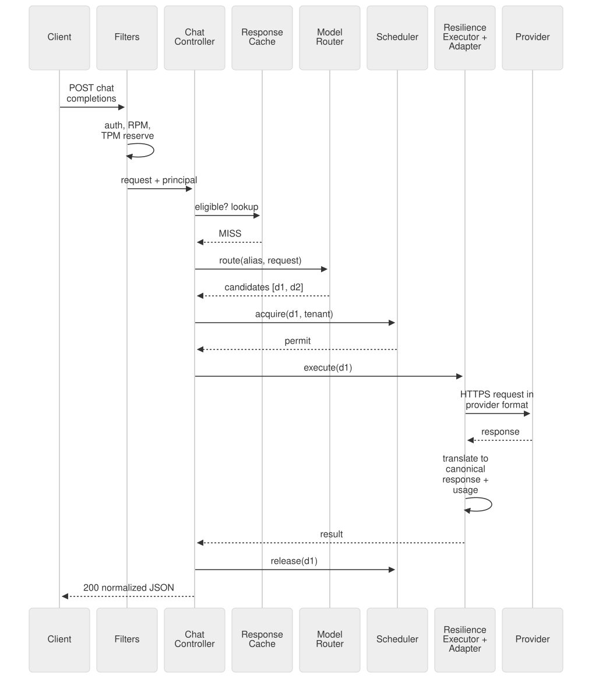
The resilience executor and the provider adapter are drawn as one participant (the executor calls the adapter in-process). After responding, the controller hands usage and cost to UsageRecorder and stores the response in the cache if it is eligible.
After responding, the controller hands usage and cost to UsageRecorder and stores the response in the cache if it is eligible.
Filters: Correlation, Api, RateLimitFilter
Authorization: Bearer gk_live_<keyId>_<secret> .GatewayPrincipal (tenant, scopes, limits, allowed aliases), or 401/429.ChatController.limit / replicas ).ChatController
ResponseCache, ModelRouter, ConcurrencyScheduler , ResilienceExecutor , UsageRecorder.ResponseCache
ModelRouter + HealthTracker
NO_HEALTHY_PROVIDER .Concurrency / Deployment / FairQueue
SaturatedException (queue full / wait timeout) → next candidate or 503 PROVIDER_SATURATED .Resilience + RetryBudget
ProviderAdapters
ProviderException with status, retryable flag, retry-after.TokenEstimator, CostCalculator, UsageRecorder
UsageEvent asynchronously.usage- (separate deployment)
requestId; update Redis aggregates; batch-archive to S3.mock-llm
Two deployables from one codebase plus a test harness: llm-gateway (synchronous, stateless), usage- (asynchronous; separated so slow S3 or Redis aggregate updates never touch request latency), and mock-llm (benchmarks only). Auth, rate limiting, and routing are modules, not services: each extra service would add a hop and a failure mode to every request.
| From → To | Protocol | Sync / async | Notes |
|---|---|---|---|
| Client → gateway | HTTPS (HTTP/1.1 or HTTP/2 via ALB), JSON or SSE | Sync | Long-lived for streams |
| Gateway → providers | HTTPS, HTTP/2 where supported, JSON or SSE | Sync | One HttpClient per provider; keep-alive |
| Gateway → Redis | RESP over TLS (Lettuce) | Sync, sub-ms | Degraded modes when down |
| Gateway → Kafka | Kafka producer | Async | After the response completes; never blocks |
| Kafka → aggregator | Consumer group | Async | At-least-once; dedup by requestId |
| Aggregator → Redis, S3 | RESP; S3 PUT | Async | Batched |
| Prometheus → pods | HTTP scrape | Async | 15 s interval |
| Data | Owner | Store | Authority |
|---|---|---|---|
| API key records | Platform team | Secrets Manager → K8s Secret → memory | Authoritative |
| Routing and pricing config | Platform team | ConfigMap (versioned in git) | Authoritative |
| Rate-limit buckets | Gateway | Redis | Ephemeral |
| Cached responses | Gateway | Redis (TTL) | Derived, disposable |
| Usage events | Gateway | Kafka (7 days), S3 (long-term) | S3 is the durable usage record |
| Usage aggregates | Aggregator | Redis hashes | Derived; rebuildable |
| Breaker / health state | Each pod | Memory | Local view per pod |
| Step | Mode |
|---|---|
| Auth, RPM/TPM admission, validation | Sync, before any provider call |
| Cache lookup | Sync |
| Routing, scheduling, provider call, streaming | Sync |
| TPM settle | Sync but fire-and-forget after completion |
| Cache write, usage publish | Async after completion |
| Aggregation and archiving | Async, other deployment |
maxConcurrentPerCluster / replicas , recomputed when the replica count changes (Downward API or a ConfigMap updated by the deploy pipeline). Approximate, but no distributed semaphore per request.
Secrets Manager syncs provider credentials and hashed gateway keys into Kubernetes Secrets; Prometheus and Grafana run in the cluster.
llm-gateway/├── pom.xml # Java 21, Spring Boot 3.4, Resilience4j, Lettuce, Kafka, Micrometer└── src/main/java/com/acme/llmgw/ ├── LlmGatewayApplication.java ├── api/ │ ├── ChatController.java # POST /v1/chat/completions │ ├── ModelsController.java # GET /v1/models │ ├── UsageController.java # GET /v1/usage │ ├── AdminController.java # /admin/v1/providers │ ├── dto/ChatRequest.java, ChatResponse.java, ChatChunk.java, Message.java, UsageDto.java, ErrorBody.java │ └── GlobalExceptionHandler.java ├── security/ │ ├── ApiKeyAuthFilter.java │ ├── ApiKeyStore.java # loads hashed keys from mounted file; hot reload │ └── GatewayPrincipal.java ├── ratelimit/ │ ├── RateLimitFilter.java │ ├── RedisTokenBucket.java # Lua scripts: RPM bucket, TPM reserve/settle │ └── LocalFallbackLimiter.java ├── routing/ │ ├── ModelRouter.java │ ├── RoutingConfig.java # aliases → deployments (from ConfigMap) │ ├── Deployment.java # id, provider, providerModel, priority, weight, limits, capabilities │ └── HealthTracker.java # EWMA TTFT, inflight, throttle cooldowns ├── scheduling/ │ ├── ConcurrencyScheduler.java │ ├── DeploymentBulkhead.java # permits + fair queue │ └── FairQueue.java # deficit round-robin across tenants ├── resilience/ │ ├── ResilienceExecutor.java │ ├── RetryPolicy.java │ └── RetryBudget.java ├── provider/ │ ├── ProviderAdapter.java # interface │ ├── AnthropicAdapter.java │ ├── OpenAiCompatibleAdapter.java │ ├── MockAdapter.java │ ├── SseLineReader.java │ └── ProviderException.java # carries status, retryable flag, retry-after ├── streaming/ │ ├── StreamRelay.java # provider events → canonical chunks → SseEmitter │ └── StreamAccumulator.java # assembles final text/usage for cache + accounting ├── cache/ │ ├── ResponseCache.java │ ├── CacheKeyFactory.java # canonical JSON + SHA-256 │ └── SingleFlight.java ├── usage/ │ ├── TokenEstimator.java │ ├── CostCalculator.java │ ├── PriceTable.java │ ├── UsageEvent.java │ └── UsageRecorder.java # Kafka producer + log fallback ├── aggregator/ # active only with profile "aggregator" │ ├── UsageAggregatorListener.java │ ├── RedisUsageAggregates.java # Lua: dedup + HINCRBY │ └── S3UsageArchiver.java └── observability/ ├── GatewayMetrics.java └── CorrelationFilter.java| HLD component | LLD package |
|---|---|
| Filters | security/, ratelimit/, observability/ |
| Controller and API | api/ |
| Router | routing/ (ModelRouter, RoutingConfig, Deployment, HealthTracker) |
| Scheduler | scheduling/ (ConcurrencyScheduler, DeploymentBulkhead, FairQueue) |
| Resilience | resilience/ (ResilienceExecutor, RetryPolicy, RetryBudget) |
| Adapters | provider/ (ProviderAdapter, AnthropicAdapter, Open, MockAdapter, SseLineReader) |
| Streaming | streaming/ (StreamRelay, StreamAccumulator) |
| Cache | cache/ (ResponseCache, CacheKeyFactory, SingleFlight) |
| Accounting | usage/ (TokenEstimator, CostCalculator, PriceTable, UsageRecorder) |
| Aggregator | aggregator/ (profile aggregator) |
ProviderAdapter is implemented by Anthropic, Open (hosted and vLLM), and MockAdapter.
ChatController — Responsibility: orchestrate one request. Method: complete(. Dependencies: cache, router, scheduler, resilience executor, usage recorder. Why: the single place where the request lifecycle is visible.
ProviderAdapter (interface) — Methods: provider(), capabilities(, complete(, stream(. Why: isolates provider formats so the rest of the system sees only canonical types.
ModelRouter — Method: route( → ordered List<Deployment>. Depends on HealthTracker (score, onResult, inCooldown). Why: health- and load-aware selection with fallbacks.
ConcurrencyScheduler / DeploymentBulkhead / FairQueue — Methods: acquire( → Permit; release(); offer, poll. Why: keep each backend at its knee and share capacity fairly.
ResilienceExecutor / RetryBudget — Methods: execute(; onRequest(), try. Why: breakers, timeouts, and bounded fallback-first retries.
ResponseCache — Methods: lookup(, store(. Why: safe exact-match reuse with single-flight.
CostCalculator / UsageRecorder — Methods: cost(; record(. Why: accurate, self-describing usage events off the request path.
public record CanonicalRequest( String requestId, String tenantId, String alias, List<CanonicalMessage> messages, // roles: system, user, assistant, tool Integer maxTokens, // required by some providers; defaulted per alias Double temperature, Double topP, // optional; dropped for providers/models that reject them List<String> stop, List<ToolDefinition> tools, // passed through, never executed by the gateway ResponseFormat responseFormat, // e.g. JSON schema, where supported boolean stream, CacheMode cacheMode, // DEFAULT, BYPASS, PREFER Map<String, String> metadata) {} public record CanonicalResponse( String id, String provider, String deploymentId, String providerModel, String content, List<ToolCall> toolCalls, FinishReason finishReason, // STOP, LENGTH, TOOL_CALLS, CONTENT_FILTER, ERROR Usage usage, Duration providerLatency, Duration ttft) {} public record Usage(long promptTokens, long completionTokens, long cacheReadTokens, long cacheWriteTokens, boolean estimated) {}public interface ProviderAdapter { String provider(); // "anthropic", "openai-compatible", "mock" Capabilities capabilities(Deployment d); // streaming, tools, json mode, sampling params, context window CanonicalResponse complete(CanonicalRequest r, Deployment d, Deadline deadline) throws ProviderException; StreamResult stream(CanonicalRequest r, Deployment d, Deadline deadline, StreamSink sink) throws ProviderException;} public interface StreamSink { void onFirstToken(); // marks "bytes committed to client" void onDelta(String text); void onToolCallDelta(ToolCallDelta d); void onUsage(Usage partialOrFinal);}| Concern | Anthropic Messages API | OpenAI-compatible (hosted / vLLM) |
|---|---|---|
| Endpoint | POST {base}/ |
POST {base}/ |
| Auth | x-api-key + anthropic-version (pinned) |
Authorization: (vLLM: optional) |
| System prompt | Top-level system field |
Message with role system |
| Max tokens | max_tokens (required) |
max_tokens / max_ (optional) |
| Sampling | Rejected by current models under the newer API version; adapter drops per capability flags | Passed through |
| Streaming | message_start, content_block_start, content_block_delta (text_delta), content_block_stop, message_delta, message_stop, ping, error |
data: chunks with choices[].delta, ending data: [DONE] |
| Usage (stream) | Input and cache tokens in message_start; cumulative output_tokens in message_delta |
Final chunk usage with stream_ |
| Finish reason | end_turn→STOP, max_tokens→LENGTH, tool_use→TOOL_CALLS, refusal→CONTENT_FILTER |
stop, length, tool_calls, content_filter |
| Non-text blocks | thinking blocks skipped |
n/a |
| Rate limited | 429 rate_limit_error + retry-after |
429 (+ retry-after if sent) |
| Overloaded | 529 overloaded_error |
503 |
| Client errors | 400, 401, 403, 404, 413 (non-retryable) | 400, 401, 403, 404 |
Example routing configuration (model IDs as of late 2026; OpenAI IDs left as placeholders):
aliases: chat-smart: defaultMaxTokens: 1024 deployments: - { id: anthropic-opus, provider: anthropic, model: claude-opus-5-5, priority: 1, weight: 1, maxConcurrentPerCluster: 64 } - { id: oai-large, provider: openai-compatible, model: "<openai-model-id>", priority: 2, weight: 1, maxConcurrentPerCluster: 64 } chat-fast: defaultMaxTokens: 512 deployments: - { id: anthropic-haiku, provider: anthropic, model: claude-haiku-5-5, priority: 1, weight: 2, maxConcurrentPerCluster: 128 } - { id: vllm-local, provider: openai-compatible, model: "llama-3.1-8b-instruct", baseUrl: "http://vllm.llm.svc:8000", priority: 1, weight: 1, maxConcurrentPerCluster: 48 } chat-bench: deployments: - { id: mock-a, provider: mock, priority: 1, weight: 1, maxConcurrentPerCluster: 96 } - { id: mock-b, provider: mock, priority: 1, weight: 1, maxConcurrentPerCluster: 48 }| Work | Thread type | Notes |
|---|---|---|
| HTTP request handling | Virtual thread per request | Blocking parks the virtual thread, not a carrier |
| Upstream HTTP | JDK HttpClient selector threads; the request's virtual thread blocks reading the body stream |
One client per provider |
| SSE writes | The request's virtual thread via SseEmitter |
A slow client backpressures the upstream read |
| Scheduler waits | Virtual thread parks on a per-waiter CompletableFuture |
No pool sized to queue length |
| Kafka producer | Producer I/O thread | send() async |
| Redis | Lettuce event loop (Netty) | Sync API from virtual threads |
Pinning caveat (Java 21): blocking inside synchronized pins the carrier thread; the gateway uses ReentrantLock on blocking paths and checks libraries with -.
final class DeploymentBulkhead { private final ReentrantLock lock = new ReentrantLock(); private volatile int maxConcurrent; // per-pod share of the deployment's cluster limit private int inFlight; private final FairQueue waiting; // DRR across tenants, bounded total size Permit acquire(String tenant, Duration maxWait) throws SaturatedException { CompletableFuture<Permit> grant; lock.lock(); try { if (inFlight < maxConcurrent && waiting.isEmpty()) { // fast path: no queue inFlight++; return new Permit(this); } grant = new CompletableFuture<>(); if (!waiting.offer(tenant, new Waiter(grant))) throw new SaturatedException("queue full"); } finally { lock.unlock(); } try { return grant.get(maxWait.toMillis(), TimeUnit.MILLISECONDS); // parks the virtual thread } catch (TimeoutException e) { lock.lock(); try { if (grant.isDone()) return grant.join(); // granted at the last moment: keep it grant.cancel(false); // mark cancelled; poll() skips cancelled waiters } finally { lock.unlock(); } throw new SaturatedException("queue wait timeout"); } } void release() { lock.lock(); try { Waiter next; while ((next = waiting.poll()) != null) { if (next.grant().complete(new Permit(this))) return; // hand the slot over: inFlight unchanged } inFlight--; // nobody waiting: free the slot } finally { lock.unlock(); } }}| Aspect | Detail |
|---|---|
| Time | acquire / release O(1) amortized (cancelled waiters skipped lazily) |
| Space | O(queued), bounded (e.g., 200 per deployment per pod) |
| Concurrency | One lock per deployment, held only for counters and queue operations, never during I/O |
| Fairness | DRR alternates tenants; a 500-request tenant cannot starve a 1-request tenant |
| Failure | Queue full → next candidate; all saturated → 503 PROVIDER_ + Retry-After |
Why hand off instead of decrement-then-reacquire: if release() freed the slot and signalled waiters to retry, a newly arriving request could take it first (barging), breaking fairness. Handing the permit directly keeps fairness and keeps inFlight exact. Completable fails for a cancelled (timed-out) waiter, so permits never go to a waiter that gave up.
Object complete(ChatRequest dto, GatewayPrincipal p) { CanonicalRequest req = normalizer.toCanonical(dto, p); // validate, defaults, alias check long estPrompt = tokenEstimator.estimate(req); Reservation tpm = rateLimiter.reserveTokens(p, estPrompt + req.maxTokens()); // 429 if insufficient Optional<CachedResponse> hit = cache.lookup(req, p); if (hit.isPresent()) { tpm.settle(0); // cache hits consume no provider tokens usage.record(UsageEvent.cacheHit(req, p, hit.get())); return req.stream() ? relay.replay(hit.get()) : hit.get().toResponse(); } List<Deployment> candidates = router.route(req.alias(), req, p); // ordered, filtered if (req.stream()) return relay.startStreaming(req, p, candidates, tpm); // returns SseEmitter; continues on this virtual thread Result r = resilience.execute(candidates, (d, deadline) -> { try (Permit permit = scheduler.acquire(d, p.tenantId(), cfg.queueWait())) { return adapters.get(d.provider()).complete(req, d, deadline); } }); tpm.settle(r.usage().promptTokens() + r.usage().completionTokens()); usage.record(UsageEvent.of(req, p, r, costCalculator.cost(r.usage(), r.deployment(), Instant.now()))); cache.storeAsync(req, p, r.response()); return ChatResponse.from(r);}SseEmitter startStreaming(CanonicalRequest req, GatewayPrincipal p, List<Deployment> candidates, Reservation tpm) { SseEmitter emitter = new SseEmitter(cfg.maxStreamDuration().toMillis()); StreamAccumulator acc = new StreamAccumulator(); AtomicBoolean committed = new AtomicBoolean(false); // true once any byte went to the client emitter.onCompletion(acc::markClientGone); emitter.onTimeout(acc::markClientGone); emitter.onError(t -> acc.markClientGone()); Thread.startVirtualThread(() -> { try { Result r = resilience.executeStreaming(candidates, committed, (d, deadline) -> { try (Permit permit = scheduler.acquire(d, p.tenantId(), cfg.queueWait())) { return adapters.get(d.provider()).stream(req, d, deadline, new StreamSink() { public void onFirstToken() { committed.set(true); } public void onDelta(String text) { if (acc.clientGone()) throw new ClientDisconnected(); // cancels the upstream read acc.append(text); send(emitter, ChatChunk.delta(req, d, text)); } public void onToolCallDelta(ToolCallDelta t) { acc.append(t); send(emitter, ChatChunk.tool(req, d, t)); } public void onUsage(Usage u) { acc.usage(u); } }); } }); Cost cost = costCalculator.cost(r.usage(), r.deployment(), Instant.now()); send(emitter, ChatChunk.finalChunk(req, r, cost)); sendRaw(emitter, "[DONE]"); emitter.complete(); finish(req, p, tpm, r, cost, acc); // settle TPM, usage event, cache store } catch (ProviderException e) { if (committed.get()) { // mid-stream failure: cannot fall back send(emitter, ChatChunk.error(req, e.code(), acc.estimatedUsage())); emitter.complete(); finishPartial(req, p, tpm, acc, e); // usage for tokens already streamed (estimated if needed) } else { emitter.completeWithError(e); // mapped to an HTTP error status by the handler } } catch (ClientDisconnected e) { finishPartial(req, p, tpm, acc, null); // stop billing beyond what was generated } }); return emitter;}Before any byte is written, the status can still be an error (502, 503, 504) or a fallback can happen. After the first byte, the status is already 200, so failures go in-band as an SSE error event.
| Pattern | Where | Why |
|---|---|---|
| Adapter | ProviderAdapter implementations |
Isolate provider formats |
| Strategy | Routing policies, cache eligibility | Swappable per alias |
| Bulkhead | DeploymentBulkhead |
One slow provider can't consume all capacity |
| Circuit breaker | Resilience4j per deployment | Fail fast; recovery probes |
| Chain of responsibility | Servlet filters | Cross-cutting concerns first |
| Single-flight | SingleFlight |
Coalesce identical concurrent misses |
| Producer–consumer | Usage via Kafka | Accounting off the request path |
| Template method | Adapter base for SSE parsing + error mapping | Shared streaming plumbing |
| Error source | Retryable | HTTP (before first byte) |
|---|---|---|
| Validation | No | 400 INVALID_REQUEST |
| Unknown / disallowed alias | No | 404 MODEL_NOT_FOUND / 403 MODEL_NOT_ALLOWED |
| Auth failure | No | 401 INVALID_API_KEY |
| RPM / TPM exceeded | Yes (after Retry-After) |
429 RATE_LIMITED |
| All deployments saturated | Yes | 503 PROVIDER_SATURATED |
| All circuits open / no healthy candidate | Yes | 503 NO_HEALTHY_PROVIDER |
| Provider 4xx | No | 400 PROVIDER_REJECTED (sanitized) |
| Provider 429 / 529 / 5xx / connect failure after retries | Yes | 502 PROVIDER_ERROR |
| Timeout before first byte | Yes | 504 PROVIDER_TIMEOUT |
| Failure after first byte | — | In-band SSE error event |
Base URL https:. All endpoints require Authorization: except health endpoints. The shape is intentionally close to the widely used Chat Completions format, so existing client libraries can point at the gateway with minimal changes, plus gateway extensions (provider, cost, cached, routing, cache).
| Header | Direction | Rule |
|---|---|---|
Authorization: |
Request | Required |
Content- |
Request | Required on POST |
Accept: |
Request | Recommended when stream=true |
X-Request-Id |
Both | Optional UUID; generated if absent; echoed and logged |
X-Request-Timeout-Ms |
Request | Optional overall deadline (1,000–300,000); default per alias |
Cache- |
Request | Bypass the cache |
X-Gateway-Provider, X-Gateway-Deployment, X-Gateway-Model |
Response | Which backend served (also in the first SSE chunk) |
X- |
Response | Cache outcome |
Server- |
Response | Gateway overhead, scheduler wait, provider time |
X-, X-, X- |
Response | Limit state |
Retry-After |
Response | With 429 and 503 |
POST /v1/chat/completions chat; alias must be in the key's allowedAliases.X-Request-Timeout-Ms or alias default (120 s non-streaming, 600 s streaming).Request:
{ "model": "chat-smart", "messages": [ { "role": "system", "content": "You are a support assistant for ACME billing." }, { "role": "user", "content": "Summarize this ticket in two sentences: ..." } ], "max_tokens": 300, "temperature": 0, "stop": ["\n\n###"], "stream": false, "response_format": { "type": "text" }, "cache": { "mode": "default" }, "routing": { "fallback": true }, "metadata": { "feature": "ticket-summary", "end_user_hash": "u_93ac..." }}POST /v1/chat/completions | Field | Type | Required | Validation |
|---|---|---|---|
model |
string | yes | A configured alias allowed for the key |
messages |
array | yes | 1–200 messages; roles system/user/assistant/tool; total ≤ 1 MB |
max_tokens |
int | no | 1 – alias max; default per alias |
temperature, top_p |
number | no | 0–2 / 0–1; dropped for deployments that reject them (reported in X-) |
stop |
string[] | no | ≤ 4 |
stream |
bool | no | Default false |
tools, tool_choice |
arrays/objects | no | Passed through when supported; otherwise that deployment is filtered out |
response_format |
object | no | text or json_schema where supported |
cache.mode |
enum | no | default, bypass, prefer (opt in even when temperature > 0) |
routing.fallback |
bool | no | Default true; false pins to the first healthy candidate |
metadata |
map | no | ≤ 16 string pairs; recorded in usage; never sent to providers |
Non-streaming response (the cost value is ILLUSTRATIVE, from placeholder prices):
{ "id": "gw-01J9Z8Q4K3W1T7N0V5B2C6D8E9", "object": "chat.completion", "created": 1785312000, "model": "chat-smart", "provider": "anthropic", "deployment": "anthropic-opus", "provider_model": "claude-opus-5-5", "choices": [ { "index": 0, "message": { "role": "assistant", "content": "The customer was double-charged ... A refund was requested." }, "finish_reason": "stop" } ], "usage": { "prompt_tokens": 412, "completion_tokens": 48, "cache_read_tokens": 0, "total_tokens": 460, "estimated": false }, "cost": { "currency": "USD", "amount_micros": 2608, "price_version": "2026-07-01" }, "cached": false, "latency_ms": { "total": 1816, "queue": 0, "provider": 1812, "ttft": null }}Streaming response (text/):
data: {"id":"gw-01J9...","object":"chat.completion.chunk","model":"chat-smart","provider":"anthropic","deployment":"anthropic-opus","choices":[{"index":0,"delta":{"role":"assistant","content":""},"finish_reason":null}]} data: {"id":"gw-01J9...","object":"chat.completion.chunk","choices":[{"index":0,"delta":{"content":"The customer"},"finish_reason":null}]} : keep-alive data: {"id":"gw-01J9...","object":"chat.completion.chunk","choices":[{"index":0,"delta":{"content":" was double-charged"},"finish_reason":null}]} data: {"id":"gw-01J9...","object":"chat.completion.chunk","choices":[{"index":0,"delta":{},"finish_reason":"stop"}],"usage":{"prompt_tokens":412,"completion_tokens":48,"total_tokens":460,"estimated":false},"cost":{"currency":"USD","amount_micros":2608,"price_version":"2026-07-01"}} data: [DONE]A : keep-alive comment is sent every 15 s so the ALB and intermediaries don't close idle connections. A mid-stream failure is reported in-band:
event: errordata: {"error":{"code":"PROVIDER_STREAM_INTERRUPTED","message":"Upstream stream ended unexpectedly","retriable":true},"usage":{"prompt_tokens":412,"completion_tokens":131,"estimated":true}}Error body before any streamed byte:
{ "error": { "code": "RATE_LIMITED", "message": "Token-per-minute limit exceeded for key gk_live_7QW", "retriable": true, "request_id": "8f2c1e9a-3b7d-4c55-9e10-0a1b2c3d4e5f" }}POST /v1/chat/completions (continued)| Status | Code | When |
|---|---|---|
| 400 | INVALID_REQUEST |
Schema or range violation |
| 400 | CONTEXT_TOO_LONG |
Estimated prompt + max_tokens exceeds every candidate's context window |
| 400 | PROVIDER_REJECTED |
Provider non-retryable 4xx (sanitized) |
| 401 | INVALID_API_KEY |
Missing, malformed, unknown, revoked, or wrong secret |
| 403 | MODEL_NOT_ALLOWED |
Alias not permitted |
| 404 | MODEL_NOT_FOUND |
Unknown alias |
| 413 | PAYLOAD_TOO_LARGE |
Body > 1 MB |
| 429 | RATE_LIMITED |
RPM or TPM exceeded |
| 429 | QUOTA_EXCEEDED |
Monthly budget exhausted (soft) |
| 502 | PROVIDER_ERROR |
Retryable provider failures exhausted |
| 503 | PROVIDER_SATURATED |
All candidate bulkheads full or queue wait timed out |
| 503 | NO_HEALTHY_PROVIDER |
All candidates' circuits open or cooling down |
| 504 | PROVIDER_TIMEOUT |
First-byte or total timeout before any streamed byte |
GET /v1/modelsLists aliases available to the caller with capabilities (no credentials or internal URLs). max_ is the minimum across the alias's deployments, so any request that fits can go to any of them.
{ "data": [ { "id": "chat-smart", "streaming": true, "tools": true, "max_context_tokens": 200000, "default_max_tokens": 1024 }, { "id": "chat-fast", "streaming": true, "tools": false, "max_context_tokens": 32000, "default_max_tokens": 512 } ]}GET /v1/usageScope usage:read; a key sees only its own tenant. group_by = day, model, or both; range ≤ 31 days (older data from the S3 archive). freshness_ reports aggregator lag; complete: false means usage-event loss was detected and not yet re-ingested. (cost_micros: 0 below is a placeholder.)
{ "tenant": "billing-team", "from": "2026-08-01", "to": "2026-08-07", "rows": [ { "day": "2026-08-01", "model": "chat-smart", "requests": 1820, "cache_hits": 410, "prompt_tokens": 931200, "completion_tokens": 120440, "cost_micros": 0, "price_versions": ["2026-07-01"] } ], "freshness_seconds": 4, "complete": true}| Endpoint | Scope | Purpose |
|---|---|---|
GET / |
admin |
This pod's view per deployment: breaker state, in-flight, queue, EWMA TTFT, cooldown |
POST / {"enabled": |
admin |
Drain a deployment cluster-wide via Redis gw:flags (pods poll every 5 s) |
/ |
— | Process alive (no dependency checks) |
/ |
— | Key table loaded, config valid, not draining. Redis and providers are not readiness dependencies |
/actuator/prometheus |
— | Metrics |
llm.usage.v1llm.usage.v1| Property | Value |
|---|---|
| Partitions / RF / ISR | 6 / 3 / 2 |
| Key | tenantId |
| Retention | 7 days |
| Producer | acks=all, idempotent, linger.ms=20, lz4, buffer.memory=32MB, max.block.ms=0 (never block a request thread) |
| Consumer | usage-aggregator, manual commit after Redis update; S3 batches committed separately |
| Delivery | At-least-once; dedup by requestId |
{ "schemaVersion": 1, "requestId": "8f2c1e9a-3b7d-4c55-9e10-0a1b2c3d4e5f", "eventTime": "2026-08-01T10:15:30.123Z", "tenantId": "billing-team", "apiKeyId": "7QW", "alias": "chat-smart", "provider": "anthropic", "deploymentId": "anthropic-opus", "providerModel": "claude-opus-5-5", "stream": true, "cacheHit": false, "outcome": "SUCCESS", "finishReason": "STOP", "attempts": 2, "fallbackUsed": true, "usage": { "promptTokens": 412, "completionTokens": 48, "cacheReadTokens": 0, "cacheWriteTokens": 0, "estimated": false }, "cost": { "currency": "USD", "amountMicros": 2608, "priceVersion": "2026-07-01" }, "latencyMs": { "total": 2410, "queue": 3, "ttft": 610, "provider": 2390 }, "metadata": { "feature": "ticket-summary" }}outcome ∈ SUCCESS, PARTIAL (stream interrupted or client disconnected), PROVIDER_ERROR, REJECTED (429/400 before any provider call; zero cost).
There is no relational database. State lives in configuration, Redis (ephemeral and derived), Kafka (7-day log), and S3 (durable usage archive).
| Entity | Key fields |
|---|---|
TENANT |
tenantId, monthlyBudgetMicros, schedulingWeight |
API_KEY |
keyId, tenantId, secretSha256, scopes, rpm, tpm, status |
ALIAS |
alias, defaultMaxTokens, firstByteTimeoutMs |
DEPLOYMENT |
deploymentId, provider, providerModel, priority, weight, max, contextWindow |
PROVIDER |
provider, baseUrl, credentialSecretRef |
PRICE_VERSION |
deploymentId, effectiveFrom, input / output / cache-read / cache-write micros per million tokens |
Configuration is versioned in git and validated at startup: an unknown provider, missing price, or duplicate id makes the pod fail readiness, and old pods keep serving.
API key record (stored hashed; the plaintext is shown once at issuance):
keys: - keyId: "7QW" tenantId: billing-team secretSha256: "3f0a9c...e1" # SHA-256 of the secret part; the plaintext is shown once at issuance scopes: [chat, usage:read] allowedAliases: [chat-smart, chat-fast] limits: { rpm: 600, tpm: 400000 } status: ACTIVEPrice table (placeholders; self-hosted vLLM priced by an internal chargeback rate or 0):
prices: - deploymentId: anthropic-opus effectiveFrom: "2026-07-01T00:00:00Z" inputMicrosPerMTok: <placeholder> outputMicrosPerMTok: <placeholder> cacheReadMicrosPerMTok: <placeholder> cacheWriteMicrosPerMTok: <placeholder> - deploymentId: vllm-local effectiveFrom: "2026-07-01T00:00:00Z" inputMicrosPerMTok: 0 # self-hosted: priced by an internal chargeback rate, or 0 outputMicrosPerMTok: 0| Key | Type | Value | TTL | Writer | Reader |
|---|---|---|---|---|---|
rl:rpm:{keyId} |
Hash {tokens, ts} |
Token bucket | 2 min idle | Gateway (Lua) | Gateway |
rl:tpm:{keyId} |
Hash {tokens, ts} |
Bucket in LLM tokens | 2 min idle | Gateway (Lua) | Gateway |
cache: |
String (gzip JSON) | Response + usage + model + created_at | 1 h default (per alias) | Gateway | Gateway |
usage: |
String | 1 |
48 h | Aggregator (Lua) | Aggregator |
usage: |
Hash | `{alias} | {field}` → integer | 40 days | Aggregator |
usage: |
String | Cost micros (budget checks) | 40 days | Aggregator | Gateway |
gw:flags |
Hash | Deployment enable flags | none | Admin API | Gateway (poll 5 s) |
{tenantId}.{ "v": 1, "providerModel": "claude-opus-5-5", "deploymentId": "anthropic-opus", "adapterVersion": "1.3.0", "createdAt": "2026-08-01T10:15:30Z", "response": { "content": "...", "finishReason": "STOP", "toolCalls": [] }, "usage": { "promptTokens": 412, "completionTokens": 48 }}Stored gzip-compressed; entries over 256 KB uncompressed are not cached.
s3://acme-llm-usage/usage/v1/dt=2026-08-01/hour=10/part-<aggregatorPod>-<firstOffset>-<lastOffset>.jsonl.gzrequestId.| Operation | Atomicity |
|---|---|
| RPM check-and-consume | Atomic (one Lua script) |
| TPM reserve / settle | Each atomic; separate operations |
| Cache get / put | Single commands |
| Usage aggregate update | Atomic per event: SET dedup NX EX then HINCRBYs only if the SET succeeded |
| Kafka offset commit vs Redis/S3 writes | Not atomic; safe because writes are idempotent |
O(request + response size) ; streaming O(1) per chunk plus the accumulator.max_tokens, breaker not OPEN (HALF_OPEN only if a probe slot is free), not in 429 cooldown.weight) and pick the lower score:
score(d) = ewmaTtftMs(d) × (inFlight(d) + queued(d) + 1) / maxConcurrent(d) [chosen] + rest of tier by score + lower tiers by priority.List<Deployment> route(String alias, CanonicalRequest r, GatewayPrincipal p) { List<Deployment> eligible = config.deployments(alias).stream() .filter(d -> flags.enabled(d) && p.allows(alias)) .filter(d -> d.capabilities().supports(r)) .filter(d -> d.contextWindow() >= estimator.estimate(r) + r.maxTokens()) .filter(d -> breakers.allowsCall(d) && !health.inCooldown(d)) .toList(); if (eligible.isEmpty()) throw new NoHealthyDeploymentException(alias); int best = eligible.stream().mapToInt(Deployment::priority).min().getAsInt(); List<Deployment> tier = eligible.stream().filter(d -> d.priority() == best).collect(toCollection(ArrayList::new)); Deployment first = tier.size() == 1 ? tier.get(0) : p2c(tier); List<Deployment> ordered = new ArrayList<>(List.of(first)); tier.stream().filter(d -> d != first).sorted(comparingDouble(health::score)).forEach(ordered::add); eligible.stream().filter(d -> d.priority() > best).sorted(comparingInt(Deployment::priority)).forEach(ordered::add); return ordered;}
O(D) filtering (D ≤ ~5); P2C O(1).schedulingWeight ; poll() visits tenants in ring order and serves a tenant while its deficit covers the head request's cost (cost = 1 request).C / S per second. Above the knee, concurrency raises latency, not throughput; timeouts and retries then lower goodput.O(1) per acquire/release; O(queued) memory.-- KEYS[1] = rl:rpm:{keyId}; ARGV: capacity, refill_per_ms, now_ms, costlocal cap, rate, now, cost = tonumber(ARGV[1]), tonumber(ARGV[2]), tonumber(ARGV[3]), tonumber(ARGV[4])local s = redis.call('HMGET', KEYS[1], 'tokens', 'ts')local tokens = tonumber(s[1]) or caplocal ts = tonumber(s[2]) or nowtokens = math.min(cap, tokens + (now - ts) * rate)local allowed = 0if tokens >= cost then tokens = tokens - cost; allowed = 1 endredis.call('HSET', KEYS[1], 'tokens', tokens, 'ts', now)redis.call('PEXPIRE', KEYS[1], 120000)return { allowed, tostring(tokens) }TPM reserve-and-settle:
estimate = promptTokensEstimate + max_tokens ; reserve it from rl:tpm:{keyId} (same script, cost = estimate); reject with 429 if it doesn't fit.actual = prompt + completion from provider usage; refund estimate − actual (never above capacity). If actual > estimate, charge the difference and allow the bucket to go slightly negative so the next requests wait.Worked example (ILLUSTRATIVE): a key has 1,200 tokens left; a request estimates 412 prompt + 300 max = 712 → reserved, 488 left. Actual usage 412 + 48 = 460 → refund 252 → 740 left. A later request estimating 1,800 tokens is rejected with 429 and a Retry-After computed from the refill rate.
O(1); two small hashes per active key.LocalFallbackLimiter at limit / replicas per pod (fail-soft).| Breaker setting | Value | Reason |
|---|---|---|
| Sliding window | Count-based, 50 calls | Enough samples |
| Minimum calls | 20 | Don't open on a handful of errors |
| Failure-rate threshold | 50% | Open when half of recent calls fail |
| Slow-call threshold | First byte > 15 s at 80% slow-call rate | A stalling provider is unhealthy |
| Open duration | 30 s | Time to recover |
| Half-open probes | 5 | Close if probes succeed |
| Recorded as failure | Connect errors, timeouts, 5xx, 529 | Provider-side problems |
| Ignored | 400, 401, 403, 404, 413 | Client errors must not open the circuit for everyone |
| 429 | Not a failure; cooldown for Retry-After (default 5 s) |
Throttling is a capacity signal |
Timeouts: connect 2 s; first byte 20 s; idle gap 30 s; total per alias/request. The first-byte timeout makes fallback useful: a stalled provider is abandoned while there is still time to try another.
Retry and fallback policy:
Result execute(List<Deployment> candidates, Attempt fn) { budget.onRequest(); // deposits 0.1 retry tokens per request ProviderException last = null; for (int i = 0; i < Math.min(candidates.size(), 2); i++) { // at most 2 attempts total Deployment d = candidates.get(i); if (i > 0 && !budget.tryAcquireRetry()) break; // retry budget exhausted: fail fast if (deadline.remaining().compareTo(cfg.minAttemptTime()) < 0) break; try { return breakers.get(d).executeCallable(() -> fn.call(d, deadline.forAttempt())); } catch (CallNotPermittedException open) { continue; // breaker opened meanwhile; next candidate, no budget used } catch (ProviderException e) { last = e; if (!e.retryable() || committedToClient()) throw e; // never retry after first streamed byte if (e.status() == 429) health.cooldown(d, e.retryAfterOr(Duration.ofSeconds(5))); } catch (SaturatedException e) { continue; // bulkhead full: try next candidate } } throw last != null ? last : new NoHealthyDeploymentException();}1 + 0.3 + 0.09 = 1.39× upstream load; fallback-first with a 10% budget → ≤ 1.1×.| Rule | Reason |
|---|---|
Not bypass and no Cache- |
Explicit opt-out |
temperature = (or omitted where the default is deterministic-leaning), or cache. |
With sampling, users expect different outputs |
finish_reason is stop or tool_calls |
Don't cache truncated, filtered, or errored responses |
| Stream completed normally | Never serve partial responses as complete |
| Response ≤ 256 KB | Memory bound |
| Alias allows caching | Some prompts depend on "now" or user state |
Key: SHA- with sorted keys and normalized whitespace. Lookup happens before routing using the alias's primary deployment; responses from a fallback are stored under the fallback's own model key, preserving "same model, same answer".
Single-flight within a pod:
CompletableFuture<CanonicalResponse> f = inFlight.computeIfAbsent(key, k -> new CompletableFuture<>());if (f is the one we created) { try { r = callProvider(); f.complete(r); store(r); } catch (e) { f.completeExceptionally(e); } finally { inFlight.remove(key); } }else return f.get(remainingDeadline);Cross-pod duplicates are allowed; a distributed lock per key isn't worth its latency and failure modes.
Why caching LLM responses is problematic:
Gateway cache vs provider prompt caching: provider-side prompt caching still runs the model but bills cached input tokens cheaper and lowers TTFT; the gateway cache skips the call entirely. The adapter passes provider cache usage into cacheReadTokens / cache.
| Situation | Prompt tokens | Completion tokens | estimated |
|---|---|---|---|
| Non-streaming success | Provider usage | Provider usage | false |
| Streaming success (Anthropic) | message_start input (+ cache tokens) |
Final cumulative message_ |
false |
| Streaming success (OpenAI-compatible) | Final chunk usage (include_usage=true) |
Same | false |
| Interrupted / client disconnected | Provider value if received, else estimate | Tokenizer count of streamed text | true |
| Cache hit | Original usage recorded; billed 0 | 0 | false |
| Rejected before provider | 0 | 0 | false |
Estimator: a model-family tokenizer where available, else a calibrated ~4 characters per token tuned from historical ratios. Used for TPM admission and context checks, never for billing when provider usage exists. Provider token-counting endpoints are used offline for calibration only (per-request calls would add a round trip).
Cost formula (integer micro-USD; prices in micro-USD per million tokens, chosen by effective):
cost_micros = ceil( ( prompt_uncached × input_price + cache_read × cache_read_price + cache_write × cache_write_price + completion × output_price ) / 1,000,000 )prompt_ when a provider includes cache tokens in the prompt total; Anthropic reports input_tokens excluding cache reads and writes, so the adapter normalizes.
Worked example (ILLUSTRATIVE, placeholder prices):
(412 × 3,000,000 + 48 × 15,000,000) / 1,000,000 = (1,236,000,000 + 720,000,000) / 1,000,000 = 1,956 µ$ ≈ $0.001956| Design choice | Reason |
|---|---|
Integer micro-dollars, long arithmetic |
No floating-point drift over millions of requests |
| Price versions with effective dates | Price changes don't rewrite history; each event records priceVersion |
| Cost computed in the gateway | The event is self-describing; re-aggregation needs no historical config |
| "Estimated cost", not invoice | Provider invoices are authoritative (discounts, batch pricing, taxes) |
SseEmitter.send flushes).onCompletion / onError fires) → ClientDisconnected → close the upstream InputStream, aborting the HTTP/2 stream or TCP connection → generation (and billing) stops early for providers that stop on disconnect → PARTIAL usage recorded.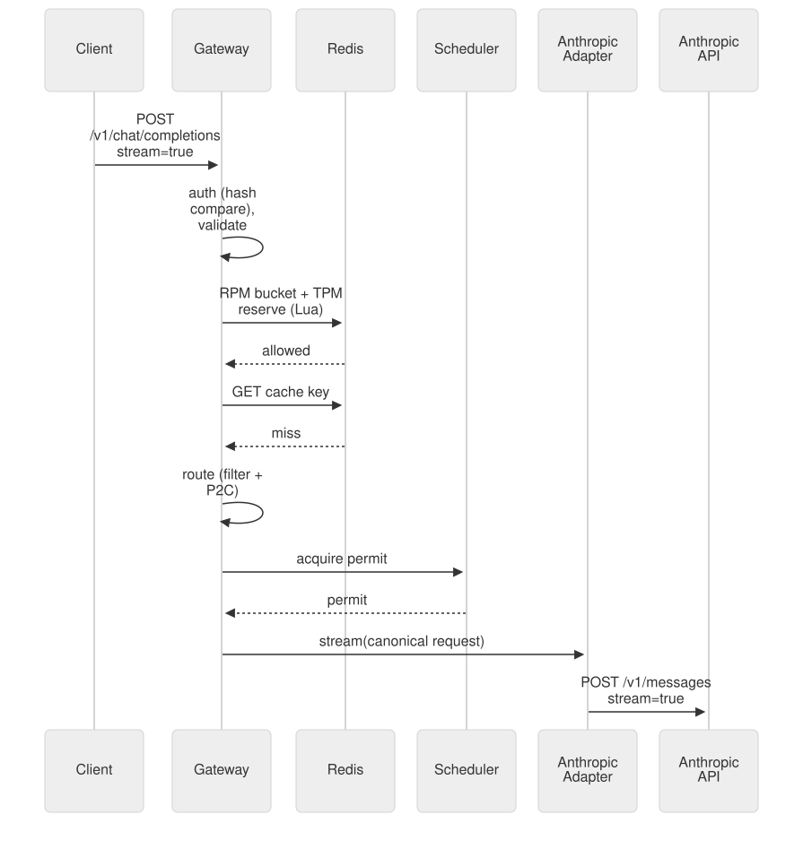
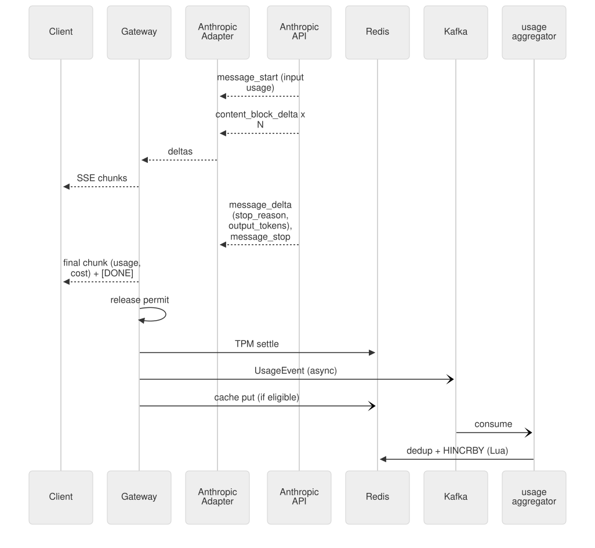
X-Request-Id, MDC.gk_live_<keyId>_<secret> , look up by keyId, compare SHA-256(secret) in constant time, check status and scope.estimatedPrompt + max_tokens ; monthly budget check against usage:month:{tenant} .GET cache:v1:{tenant}:{hash} → miss.system, max_tokens, stream: true, x-api-key, anthropic-version .thinking blocks skipped; usage captured from message_start and message_delta.finish_reason, usage, cost; [DONE]; permit released; breaker success; EWMA TTFT updated.requestId, increment tenant/day and month totals, buffer for S3.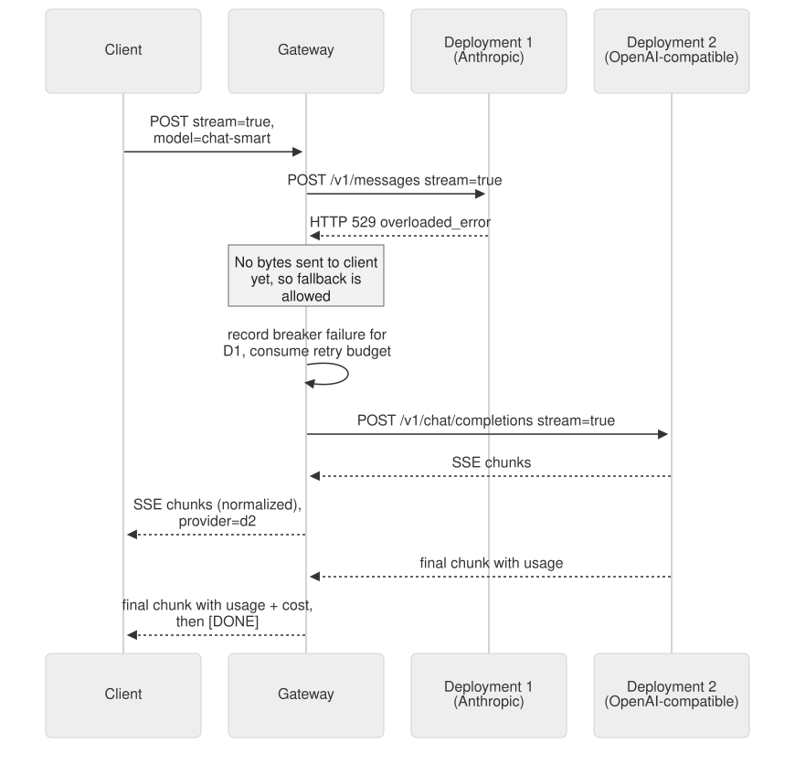
The primary returns 529 (or times out at 20 s waiting for the first byte, or refuses the connection); the breaker records a failure; the retry budget allows one fallback; the client sees one successful stream naming the fallback provider. Usage event: attempts: 2, fallback.
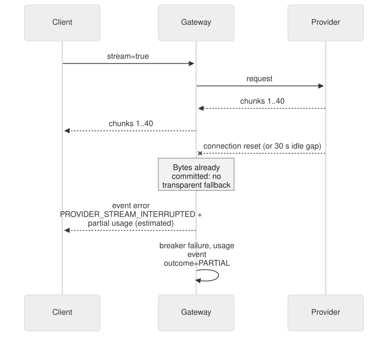
The gateway does not restart on another provider: a different continuation spliced onto text the user saw would be incoherent. The client has the partial text and decides.
GET cache:v1:... returns an entry.cached: true, X-Gateway-Cache: HIT , provider fields from the entry, cost 0. Streaming: replay as a few SSE chunks, final chunk, [DONE].cacheHit: true, billed 0.Latency: a Redis round trip (~1 ms) + decompression + serialization (ILLUSTRATIVE), versus seconds for a provider call.
429 RATE_LIMITED with Retry-After from the refill rate and X-RateLimit-Remaining-Tokens: 1200 .outcome: REJECTED , zero cost; no provider call.503 PROVIDER_SATURATED , Retry-After: 2.send fails; ClientDisconnected closes the upstream (aborting generation).PARTIAL: input tokens from message_start (Anthropic) and completion tokens counted from streamed text (estimated: true).send fails fast (max.block.ms=0), the event is written as a USAGE_FALLBACK structured log line, and llm_gateway_usage_events_failed_total increments. The client response is unaffected. After recovery an ops job re-publishes; dedup makes it safe.Each request runs on its own virtual thread. Limits are explicit and layered:
| Layer | Limit | Purpose |
|---|---|---|
| ALB / ingress | Connection limits | Edge protection |
| Tomcat | max-connections (e.g., 10,000), accept queue |
Socket bound per pod |
| Per-pod in-flight guard | e.g., 2,000 | Memory bound; excess gets 503 immediately |
| RPM / TPM per key | Redis buckets | Tenant fairness over time |
| Per-deployment bulkhead | max |
Keep each backend at its knee |
| Fair queue | Bounded, DRR by tenant | Fairness at contention |
| Upstream connection pool | ≥ bulkhead size | Never the hidden bottleneck |
| Race | Where | Prevention |
|---|---|---|
| Two requests take the last RPM token | Redis bucket | Atomic Lua script |
| Lost TPM refund | Reserve then settle | Each atomic; refunds additive; crash loses ≤ one reservation (self-heals) |
| Permit leak | Bulkhead | try-with-resources; release on every path including disconnects |
| Permit granted to a timed-out waiter | Bulkhead | Handoff via Completable, which fails for cancelled waiters; release() keeps polling |
| Duplicate provider calls for identical requests | Cache misses | Per-pod single-flight; cross-pod duplicates accepted |
| Double-counted usage | Aggregator redelivery | Lua dedup + increments in one script |
| Breaker state updates | Resilience4j | Internally thread-safe |
Atomic: RPM consume, TPM reserve, TPM settle, aggregate update. Not atomic across the request lifecycle: a request can be charged an RPM token and a TPM reservation and then fail at the provider; the TPM reservation is refunded (settle with 0 if no tokens were generated), the RPM token is not (it counts requests, including failed ones).
| Data | Guarantee |
|---|---|
| Rate limits | Cluster-wide, linearizable per key (single Redis primary); approximate in fallback mode |
| Breaker state | Per pod; pods may briefly disagree |
| Bulkhead limits | Per-pod share of a cluster limit; total ≈ the cluster limit |
| Cache | Eventually consistent, TTL-bounded; entries immutable once written |
| Usage aggregates | Eventually consistent (seconds); exactly-once per requestId within 48 h |
| S3 archive | At-least-once; dedup by requestId downstream |
| Budget enforcement | Soft: aggregates lag by seconds; a burst can exceed slightly |
| Duplicate | Handling |
|---|---|
| Client retry after a timeout | Not deduplicated (no idempotency key in v1); cost may double; cacheable requests hit the cache |
| Gateway fallback attempt | ≤ 2 attempts; only before the first byte; recorded as attempts |
| Kafka redelivery | Dedup key |
| Re-published fallback-log records | Dedup key |
| Failure moment | Effect on that request | Effect on others |
|---|---|---|
| Connect refused | Fallback (if budget allows) | Breaker failure count rises |
| HTTP 429 | Fallback; deployment cooldown | New requests skip it during cooldown |
| 529 / 503 / 5xx before body | Fallback | Breaker may open |
| First-byte timeout (20 s) | Abandon; fallback if deadline allows | Breaker slow/failure count |
| Mid-stream disconnect or idle gap | In-band error; partial usage; no fallback | Breaker failure |
| Breaker opens mid-flight | In-flight requests continue | New requests route elsewhere |
| Provider slow but healthy | Longer requests; slots held longer; queue waits grow | P2C shifts traffic within the tier |
None beyond Redis atomic scripts and the Kafka group coordinator. No leader election: every pod is identical. Configuration changes propagate by watching mounted files; admin flags by polling Redis.
| Failure scenario | Why it happens | System behaviour | Recovery mechanism | Remaining risk |
|---|---|---|---|---|
| Provider outage (5xx/529) | Provider incident | Fallback; breaker opens after threshold; route elsewhere | Half-open probes after 30 s | Fallback tier may saturate (503) |
| Provider throttling (429) | Over our provider quota | Cooldown for Retry-After; fallback |
Cooldown expires | None |
| Provider slow / stalled | Overload, stalls | First-byte timeout; slow-call breaker trip; fallback | Probes | Tail latency |
| Provider failure mid-stream | Reset, idle gap | In-band error; partial usage | Client retries with partial text | Partial completion billed (estimated) |
| Network failure to provider | Connectivity | Connect timeout; fallback | Automatic | None |
| Redis unavailable | Outage | 50 ms timeout → local limiter (limit /); cache bypass; budget check skipped (alerted) |
Automatic on reconnect | Approximate limits; budgets unenforced temporarily |
| Kafka unavailable | Outage | Producer buffer, then structured fallback log | Re-publish from logs; aggregator dedups | Aggregates lag; complete: false |
| Aggregator crash | Pod failure | Rebalance to the other replica | Redelivery from last committed offset | None (dedup) |
| S3 write failure | S3 errors | Retry; offsets not committed | Automatic | Archive delayed |
| Gateway pod crash | Pod/node failure | ALB health check; other pods serve | New pod | In-flight requests fail; their usage may be lost |
| Duplicate usage events | Redelivery | Dedup key hit, ignored | — | None within 48 h |
| Client deadline exceeded | Slow provider | 504 before first byte; in-band error after |
Client retry | Provider cost without delivered result (recorded PARTIAL if known) |
| Key table reload fails | Bad Secret | Keep last good table; alert | Fix the Secret | New / revoked keys not applied until fixed |
| Bad routing config | Invalid YAML | Startup validation fails; pod not ready; rollout halts | Fix and redeploy | None (old pods keep serving) |
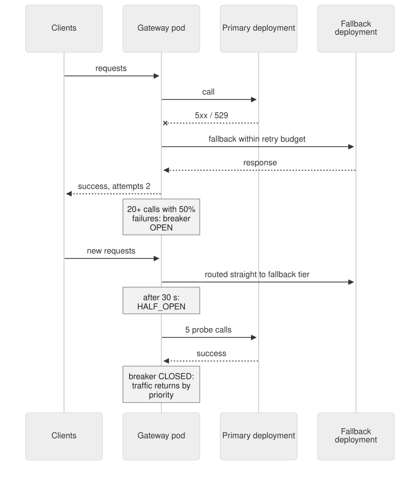
POST /admin/v1/providers/{id}/state to skip probing during a known incident.Kafka: requests continue; the 32 MB buffer (roughly 50K–100K events) absorbs short outages; then events go to the fallback log and usage_ alerts; after recovery an ops job replays fallback records; dedup prevents double counting; the usage API shows complete: true again.
Redis: rate limiting switches to the local limiter; the cache is bypassed (providers see more load; bulkheads still protect them); budget enforcement is skipped and alerted; on recovery buckets start full, so a brief allowance burst is possible.
SIGTERM → readiness false → ALB stops sending new requests after the deregistration delay (preStop sleeps 10 s first).GATEWAY_SHUTTING_DOWN error and are closed.producer.flush() (5 s) for pending usage events.terminationGracePeriodSeconds: 120 ; the ALB deregistration delay is ≥ the drain time.requestId within 48 h for events that reach Kafka.Provider time dominates: hundreds of milliseconds to the first token and seconds for a full generation. The gateway's work (auth, two pipelined Redis round trips, JSON translation) is a few milliseconds. Performance engineering here means:
ILLUSTRATIVE budget for a non-streaming cache miss:
| Step | Time |
|---|---|
| Auth (in-memory lookup + SHA-256) | < 0.1 ms |
| RPM + TPM Lua scripts (pipelined) | 0.5–2 ms |
| Cache GET | 0.3–1 ms |
| Routing + scheduling (no queue) | < 0.1 ms |
| Request translation + JSON | 0.2–1 ms |
| Provider time | 0.5–30 s |
| Response translation | 0.2–1 ms |
| Total gateway overhead | ~2–5 ms (target p99 < 20 ms) |
| Bottleneck | Mechanism | Symptom |
|---|---|---|
| Fixed platform thread pool | Each request holds an OS thread for seconds | Pool exhaustion; Tomcat queueing |
| Small upstream connection pool | Low per-route connection limit | Waiting for a connection with no provider-side cause |
| Load-blind round-robin | Equal traffic to unequal backends | Weak backend overloads while the strong one idles |
| No concurrency control | Backends pushed past their knee | Provider queueing, 429/529s, timeouts |
| Unbounded retries | Failures create more load | Retry storms; goodput collapse |
| No cache | Repeated deterministic prompts all go to providers | Wasted capacity and cost |
| Optimization | What it removes | Cost | How to measure |
|---|---|---|---|
| OPT-1: Virtual threads + right-sized upstream pools (≥ bulkhead size) | Accidental, unfair, invisible queues | Pinning on synchronized; ThreadLocal memory |
Live threads, pool wait time, Server-Timing queue vs upstream |
| OPT-2: Load-aware routing (P2C on TTFT × load) | Weak backend bottleneck under round-robin | Local view; EWMA lag | Request share vs capacity per deployment |
| OPT-3: Bulkheads at the knee + DRR | Provider-side overload collapse | Must measure each knee; per-pod approximation | TTFT vs in-flight curve; queue wait; 429/529 rate |
| OPT-4: Exact-match cache + single-flight | Repeated deterministic provider calls | Correctness limits; memory; privacy surface | Hit/miss/ineligible counters; latency by cache outcome |
| OPT-5: Retry budget + fallback-first retries | Retry amplification | Some transient errors surface to clients | Upstream attempts / client requests |
| OPT-6: Cheap per-request work | Keys in memory; pipelined Lua; reused ObjectWriter; no body logging |
— | Server-Timing gw; JFR CPU profile |
Cache effect on throughput (ILLUSTRATIVE): when provider-bound, throughput rises roughly with 1 / (1 − h) for hit rate h; mean latency falls a lot; p95 falls much less (Section 21).
linger.ms=20, lz4) and by the aggregator (Redis pipelining, S3 files). Request batching to providers is not done: hosted chat APIs don't support it, and vLLM batches continuously across concurrent requests internally, which is exactly why its throughput depends on the concurrency the gateway allows.503; saturated tenant → 429; pod overload → in-flight guard 503 + HPA; slow Kafka → producer buffer, never blocking request threads.Status: intended plan only. Nothing has been executed; result tables are blank; all numbers are targets or ILLUSTRATIVE. Results will depend heavily on mock-provider parameters, which must be published with any number.
| Test | Objective | Expected / assertion |
|---|---|---|
| Unit: adapters | Translation both ways | Recorded fixtures (incl. tool calls, thinking, refusal, unknown events) → exact canonical content, finish reasons, usage; unknown events ignored |
| Unit: cost calculator | Exact integer arithmetic | Correct micro-dollars; correct price version across an effective date |
| Unit: cache key | Canonical, stable, sensitive | Equal for reordered JSON; different for parameter or tenant change |
| Unit: router | Filtering and P2C | Ineligible excluded; lower score chosen more often over 10K draws |
| Unit: bulkhead | Permits, fairness, timeouts | Tenant A floods 500, B sends 5, limit 4 → B served within ~10 grants; no leaks; timed-out waiters never hold permits |
| Integration: Redis Lua | Atomic limits and dedup | 1,000 concurrent consumes on a 100-token bucket → exactly 100 allowed; duplicates counted once |
| Integration: end to end with mock | Full path | Normalized responses; SSE order; usage event with correct tokens and cost |
| API contract | Status codes | 401/403/404/413/400 with documented codes; no provider call |
| Concurrency: single-flight | One call per identical burst | 50 identical requests → mock sees 1 call |
| Concurrency: pinning | No carrier pinning | No pinning traces from gateway code under load |
| Failure: provider errors | Breaker + fallback | 30% 503s → breaker opens; fallback serves; amplification ≤ 1.1 |
| Failure: mid-stream cut | In-band error, partial usage | SSE error; PARTIAL usage; no cache write |
| Failure: Redis down / Kafka down | Degraded modes | Requests succeed; local limiter; fallback log; aggregates match after replay |
| Recovery: half-open | Return to primary | Breaker closes after probes |
| Stress / soak | Graceful overload; leaks | 503 with Retry-After rather than timeouts; flat heap; stable p99 |
The test that most directly supports "concurrent scheduling" is the bulkhead fairness test.
| Parameter | mock-a (strong) |
mock-b (weak) |
|---|---|---|
| Efficient concurrency | TBD (e.g., 24) | TBD (e.g., 12) |
| TTFT | Lognormal, configurable | Same family, slower |
| Output tokens | Long-tailed distribution, capped by max_tokens |
Same |
| Overload behaviour | When in-flight > capacity, inter-token time scales by in_ and TTFT adds queue time |
Same |
| Fault injection | 503/529/429 rate, stall rate, mid-stream disconnect rate | Same |
| Usage reporting | Exact token counts (ground truth) | Same |
| Parameter | Value |
|---|---|
| Endpoint / alias | POST /, chat-bench (→ mock-a, mock-b, same priority) |
| Mode | Non-streaming for the A/B claim; streaming separately |
| Clients | 50 k6 VUs, closed loop, zero think time; also 64, 80, 100 |
| Prompt mix | 30% from 200 templated prompts at temperature 0 (cache-eligible); 70% unique |
Prompt size / max_tokens |
200–2,000 tokens / 600 |
| Warm-up / steady / runs | 2 min / 10 min / 3 |
| Rate limits | Raised; any 429 counts as an error |
Tools: k6 (closed-loop and arrival-rate executors), xk6-sse or a JDK client for TTFT, Prometheus + Grafana, JFR / async-profiler (overhead and pinning), and the mock's counters (ground truth for attempts and tokens).
| # | Scenario | Purpose |
|---|---|---|
| L1 | A/B at 50 VUs, non-streaming | ~2× throughput, ~25% p95 |
| L2 | Ablation (no cache; round-robin; no bulkheads; no budget; platform threads) | Attribution |
| L3 | Sweep 25 → 150 VUs | Behaviour beyond 50; find the knee |
| L4 | Streaming at 50 VUs | TTFT p50/p95/p99, in-band error rate |
| L5 | mock-a 30% 503/529 for 3 min, then 10% stalls |
Breaker, fallback, budget; amplification ≤ 1.1 |
| L6 | mock-a fully down 2 min |
Failover and recovery |
| L7 | Fixed 100 ms mock latency | Gateway overhead p99 < 20 ms |
| L8 | Ramp 50 → 400 VUs with HPA | Scale-out before p99 degrades |
| L9 | Rolling restart during streaming | Graceful draining |
| L10 | 100K mixed requests | Accounting vs mock ground truth |
| L11 | 50 VUs for 4 h | Leaks, pinning, memory |
| Aspect | Baseline | Optimized |
|---|---|---|
| Request threads | Tomcat platform threads (200) | Virtual threads |
| Upstream client | Blocking client, small per-route pool (e.g., 20, recorded) | JDK HttpClient, per-host limits ≥ bulkhead |
| Routing | Round-robin | P2C on TTFT × load |
| Concurrency control | None | Bulkheads at measured capacity + DRR |
| Cache | Off | On (eligibility rules) |
| Retries | Up to 2 on the same deployment | 1 fallback within a 10% budget |
| Held constant | Pod count and size, mock parameters, workload, Redis/Kafka, k6 node, versions |
Report the baseline's exact pool and thread settings: a deliberately crippled baseline inflates any ratio.
Throughput (successful complete responses / s), p50/p95/p99 (non-streaming), TTFT percentiles, error rate (non-2xx + in-band errors), cache hit rate, gateway overhead (total − upstream − queue), queue wait, provider latency, retry amplification, breaker time in OPEN, CPU/memory per pod, tokens and cost vs ground truth.
# Representative only; not created in this repository.FROM eclipse-temurin:21-jreRUN useradd -u 10001 appWORKDIR /appCOPY target/llm-gateway.jar app.jarUSER appENV JAVA_OPTS="-XX:+UseG1GC -XX:MaxRAMPercentage=75 -Djdk.tracePinnedThreads=short"EXPOSE 8080ENTRYPOINT ["sh", "-c", "exec java $JAVA_OPTS -jar app.jar"]The same image runs gateway and aggregator profiles; mock-llm is a separate small image.
| Resource | Purpose |
|---|---|
Deployment llm- |
Gateway pods (profile gateway) |
Horizontal |
3–12 replicas on in-flight per pod (target 300) and CPU (70%) |
Service + Ingress (ALB) |
HTTPS entry; idle timeout 300 s for SSE |
Deployment usage- |
2 replicas |
Deployment mock-, mock-b |
Benchmarks only |
Config, llm-pricing |
Aliases, deployments, prices (versioned in git) |
Secret llm-, llm-gateway-keys |
Provider keys; hashed gateway keys |
ServiceAccount + IRSA |
S3 write for the aggregator |
PodDisruptionBudget |
minAvailable: 2 for the gateway |
ServiceMonitor |
Prometheus scraping |
Representative gateway Deployment:
apiVersion: apps/v1kind: Deploymentmetadata: { name: llm-gateway, namespace: llm }spec: replicas: 3 selector: { matchLabels: { app: llm-gateway } } strategy: { rollingUpdate: { maxSurge: 1, maxUnavailable: 0 } } template: metadata: { labels: { app: llm-gateway } } spec: terminationGracePeriodSeconds: 120 containers: - name: gateway image: <account>.dkr.ecr.<region>.amazonaws.com/llm-gateway:1.3.0 env: - { name: SPRING_PROFILES_ACTIVE, value: gateway } - { name: SPRING_THREADS_VIRTUAL_ENABLED, value: "true" } - name: POD_REPLICAS_HINT valueFrom: { configMapKeyRef: { name: llm-runtime, key: replicas } } envFrom: - secretRef: { name: llm-provider-keys } volumeMounts: - { name: routing, mountPath: /config/routing } - { name: pricing, mountPath: /config/pricing } - { name: gateway-keys, mountPath: /config/keys, readOnly: true } ports: [{ containerPort: 8080 }] readinessProbe: { httpGet: { path: /actuator/health/readiness, port: 8080 }, periodSeconds: 5 } livenessProbe: { httpGet: { path: /actuator/health/liveness, port: 8080 }, periodSeconds: 10 } lifecycle: preStop: { exec: { command: ["sh", "-c", "sleep 10"] } } resources: requests: { cpu: "1", memory: 2Gi } limits: { cpu: "2", memory: 2Gi } volumes: - { name: routing, configMap: { name: llm-routing } } - { name: pricing, configMap: { name: llm-pricing } } - { name: gateway-keys, secret: { secretName: llm-gateway-keys } }Representative HPA:
apiVersion: autoscaling/v2kind: HorizontalPodAutoscalermetadata: { name: llm-gateway, namespace: llm }spec: scaleTargetRef: { apiVersion: apps/v1, kind: Deployment, name: llm-gateway } minReplicas: 3 maxReplicas: 12 metrics: - type: Pods pods: metric: { name: llm_gateway_inflight_requests } # exposed via Prometheus Adapter target: { type: AverageValue, averageValue: "300" } - type: Resource resource: { name: cpu, target: { type: Utilization, averageUtilization: 70 } } behavior: scaleUp: { stabilizationWindowSeconds: 30, policies: [{ type: Pods, value: 2, periodSeconds: 60 }] } scaleDown: { stabilizationWindowSeconds: 300, policies: [{ type: Pods, value: 1, periodSeconds: 120 }] }Why in-flight requests instead of CPU alone: a gateway pod spends most of each request waiting; CPU can sit at 20% while the pod holds thousands of streams and approaches its memory and connection limits. Slow scale-down avoids cutting long streams. Caveat: scaling the gateway does not add provider capacity; the per-deployment cluster limit (divided across replicas) keeps total provider concurrency constant regardless of replica count.
| Item | Source | Reload |
|---|---|---|
| Routing (aliases, deployments, limits, timeouts) | ConfigMap file | File watch; validated before swap |
| Prices | ConfigMap file | Same |
| Gateway API keys (hashed) | Secret file | File watch every 60 s |
| Provider credentials | Secret env vars | Pod restart (rotation via rolling update) |
| Replica-count hint for per-pod limits | ConfigMap updated by the deploy pipeline / HPA watcher | File watch |
| Probe | Checks | Deliberately not checked |
|---|---|---|
| Readiness | Key table loaded; config valid; not draining | Redis, Kafka, providers (degraded modes exist; unready-on-provider-outage would cause a full outage) |
| Liveness | App context alive | Any dependency |
Resources: memory request = limit 2 GiB (heap 75%); CPU request 1, limit 2 (watch throttling).
| Service | Role | Notes |
|---|---|---|
| EKS | Gateway, aggregator, mock, vLLM (GPU node group) | Cluster autoscaler or Karpenter |
| ALB | HTTPS ingress | Idle timeout 300 s; HTTP/2 to clients |
| ElastiCache Redis | Limits, cache, aggregates | Multi-AZ, TLS, AUTH |
| MSK | Usage events | 3 brokers, TLS, IAM auth |
| S3 | Usage archive | Lifecycle to cheaper storage after 90 days |
| Secrets Manager | Provider credentials, key hashes | Synced into Kubernetes Secrets |
| NAT gateway | Egress to hosted providers | Cost and a per-AZ single point of failure; one NAT per AZ |
| CloudWatch | AWS service metrics | Prometheus covers the application |
One JSON line per request at completion, with no prompt or response content:
{"ts":"2026-08-01T10:15:32.533Z","level":"INFO","requestId":"8f2c1e9a-...","tenant":"billing-team","keyId":"7QW","alias":"chat-smart","deployment":"anthropic-opus","stream":true,"cache":"MISS","status":200,"outcome":"SUCCESS","attempts":2,"fallback":true,"promptTokens":412,"completionTokens":48,"costMicros":2608,"ttftMs":610,"totalMs":2410,"queueMs":3,"gwMs":4.1}requestId is propagated to providers where supported and logged by mock-llm, so one request can be traced across gateway, provider, and usage pipeline. OpenTelemetry tracing is a future improvement.
| Metric | Type | Use |
|---|---|---|
llm_ |
Counter | Throughput, errors |
llm_ |
Histogram | p50/p95/p99 |
llm_ |
Histogram | Streaming responsiveness; routing input |
llm_ |
Histogram | Provider latency |
llm_ |
Histogram | Gateway-added time |
llm_ |
Histogram | Scheduler waits |
llm_ |
Gauge | HPA metric |
llm_ / _queued |
Gauge | Bulkhead utilization |
llm_ |
Counter | Saturation |
llm_ |
Counter | Tenant throttling |
llm_, llm_ |
Counter | Resilience activity |
llm_ |
Counter | Amplification guard |
resilience4j_ |
Gauge | Breaker state |
llm_ |
Counter | Hit rate |
llm_ |
Counter | Token volume |
llm_ |
Counter | Spend rate (estimated) |
llm_ |
Counter | Accounting risk |
Cardinality rule: no tenantId, requestId, or userId labels on high-volume metrics; per-tenant views come from usage aggregates.
# p99 end-to-end latency, non-streaming, merged across podshistogram_quantile(0.99, sum by (le) (rate(llm_gateway_request_duration_seconds_bucket{stream="false"}[5m]))) # Error rate (5xx + in-band stream errors)sum(rate(llm_gateway_requests_total{outcome=~"PROVIDER_ERROR|PARTIAL"}[5m])) / sum(rate(llm_gateway_requests_total[5m])) # Cache hit rate among eligible requestssum(rate(llm_gateway_cache_requests_total{result="hit"}[5m])) / sum(rate(llm_gateway_cache_requests_total{result=~"hit|miss"}[5m])) # Estimated spend per hour by alias (USD)sum by (alias) (rate(llm_gateway_cost_micros_total[1h])) * 3600 / 1e6Dashboards: gateway overview; providers (latency, TTFT, in-flight vs limit, queues, 429/529/5xx, breaker timeline, cooldowns); cost and tokens (spend/hour, cache savings); resilience (retries, fallbacks, budget exhaustion, amplification); usage pipeline (producer errors, fallback-log count, aggregator lag, S3 errors).
| Alert | Condition | Action |
|---|---|---|
| HighErrorRate | Error rate > 5% for 5 min | Check the provider dashboard |
| LatencyP99 | p99 above alias SLO for 10 min | Queueing vs provider latency |
| CircuitOpen | Breaker OPEN > 2 min | Provider incident; consider manual drain |
| ProviderSaturated | Scheduler rejections > 1% for 10 min | Raise provider limits or capacity |
| RetryBudgetExhausted | Sustained exhaustion | Ongoing provider failure |
| UsageEventsFailing | Failed usage events increasing | Kafka problem; accounting at risk |
| CostBurn | Spend/hour > 2× trailing 7-day average | Runaway client or misrouting |
| PinnedVirtualThreads | Pinning events (benchmark/staging) | Fix the blocking synchronized path |
| Symptom | First check | Likely cause | Action |
|---|---|---|---|
| p99 up, gateway CPU flat | Queue wait, TTFT per deployment | Provider-bound | Don't scale pods; raise provider limits or shift traffic |
| p99 up, high CPU / in-flight | Server-Timing gw, JFR |
Gateway-bound | Scale pods; check pinning |
Many 503 PROVIDER_SATURATED |
Scheduler rejections per deployment | Bulkheads full | Provider capacity; check knee settings |
| Error spike on one provider | Breaker state, 5xx/529 rates | Provider incident | Confirm fallback; manual drain if needed |
| Many 429 from providers | Cooldown events | Provider quota exceeded | Re-size per-key limits; check bulkheads |
| Usage numbers incomplete | usage_, aggregator lag |
Kafka problem | Replay fallback log; check complete flag |
| Spend spike | CostBurn, spend by alias | Runaway client or misrouting | Throttle the key; roll back config |
Trace one request by requestId across gateway logs, mock or provider logs, and the usage event.
This is a speaking script for explaining the whole project continuously in about 30 minutes. Each segment has what to say (written to be spoken aloud), the technical details behind the words, the diagram to draw, the points you must not forget, the most likely interruption, and a transition into the next segment.
Honesty rule for the whole talk: the resume figures (50+ concurrent clients, ~2× throughput, ~25% p95 reduction, p99/error-rate benchmarking) are benchmark targets measured against mock providers, not recorded results. All prices are placeholders. Say so the first time you mention a number.
| Time | Segment |
|---|---|
| 0–2 min | 1. Problem statement and motivation |
| 2–5 min | 2. Requirements, scope, and technology stack |
| 5–10 min | 3. High-level design and architecture |
| 10–15 min | 4. Low-level design: request path, adapters, threads |
| 15–19 min | 5. Core algorithms: routing, scheduling, rate limiting, resilience |
| 19–23 min | 6. API, data, caching, accounting, and consistency |
| 23–26 min | 7. Failure handling and recovery |
| 26–28 min | 8. Performance engineering and benchmarking |
| 28–30 min | 9. Trade-offs, limitations, and future improvements |
What to say:
"This project is an LLM gateway: one internal service that sits between a company's applications and several large-language-model providers. Before it, every team called providers directly. Each team re-implemented API keys, retries, timeouts, streaming parsers, and cost tracking. Nobody knew total spend per team. One team's burst could exhaust a shared provider rate limit for everyone. When a provider had an outage, every application failed at once. And switching models meant code changes in every service.
The gateway centralizes all of that: one API for every backend, per-application authentication and quotas, routing from a logical model name to the best healthy backend with fallback, streaming that behaves the same regardless of provider, protection of backends under concurrent load, exact token accounting with estimated cost per tenant, and metrics and dashboards.
LLM traffic is unusual for a gateway: requests last seconds to minutes, responses stream token by token, cost is per token rather than per request, providers throttle on tokens per minute, and failures are frequent and partial. So it exercises concurrency control, resilience patterns, streaming I/O, caching correctness, and usage accounting all in one service."
Technical details to understand:
Diagram to draw: "before" (many apps → many providers, a tangle) vs "after" (apps → gateway → providers).
Key points to remember:
Likely interruption: "Why not a shared client library?" A library still puts provider keys in every service, can't enforce cross-service quotas or fairness, can't fail over centrally, and needs coordinated upgrades. The gateway costs one hop of a few milliseconds.
Transition: "Let me be precise about the requirements and the stack."
What to say:
"Functionally: one endpoint, POST /, in a Chat-Completions-style schema, streaming and non-streaming. Every request authenticates with a gateway API key mapped to a tenant, scopes, allowed models, and limits. Per-key requests-per-minute and tokens-per-minute limits. Routing of a logical alias like chat-smart to one of several provider deployments by priority, health, load, and capability. Normalized responses. Per-deployment timeouts, bounded retries, fallback, and circuit breakers. Concurrency limits per deployment with fair queuing across tenants. A Redis response cache for eligible requests with tenant isolation. Token and cost tracking for every request, published to Kafka, with a per-tenant usage API. Prometheus metrics, Grafana dashboards, and Kubernetes autoscaling with graceful draining of streams.
Non-functionally: the gateway's own added latency should be under 20 milliseconds at p99 on cache misses; it must behave correctly with 50-plus concurrent clients and hundreds of open streams per pod; the A/B targets are about 2× throughput and about 25% lower p95 versus a naive gateway at 50 clients. One provider's outage must not fail requests that can fall back. Usage is recorded for every completed request, with loss only under documented Kafka-outage conditions. Provider credentials never leave the gateway, and tenants can't see each other's cache or usage.
The stack: Java 21 with virtual threads and Spring Boot 3.4 Web MVC, because waiting on providers becomes cheap while the code stays simple and blocking. The JDK HttpClient for upstream calls, with HTTP/2 and streaming bodies. Resilience4j circuit breakers. Redis via Lettuce for rate limits and the cache, with atomic Lua scripts. Kafka for usage events. S3 as the durable usage archive, so there's no relational database at all. Micrometer, Prometheus, and Grafana. EKS with an ALB and an HPA. And k6 against a mock provider for benchmarks."
Technical details to understand:
Diagram to draw: skip, or a stack list.
Key points to remember:
Likely interruption: "Why virtual threads rather than WebFlux?" Most time is spent waiting on providers. Virtual threads make waiting cheap while keeping blocking-style code for stream parsing, scheduling, and timeouts. WebFlux would work and has more built-in backpressure, but it's harder to read. The caveat is pinning on synchronized in Java 21.
Transition: "Here's how the pieces fit together."
What to say:
"Clients call an AWS Application Load Balancer, with its idle timeout raised to 300 seconds so streams aren't cut, which forwards to stateless llm-gateway pods, three to twelve of them under an HPA.
Inside a pod, a request passes a filter chain: correlation id, API-key authentication, and rate limiting against Redis. The controller checks the response cache. On a miss, the router picks a provider deployment; the scheduler admits the request under that deployment's concurrency limit or queues it fairly; the resilience layer applies timeouts, retries, and the circuit breaker; and a provider adapter translates to and from the provider's API. After the response completes, the usage recorder publishes token and cost data to Kafka asynchronously.
Behind the gateway: Anthropic's Messages API, a hosted OpenAI-compatible API, and a self-hosted vLLM server on GPU nodes. Redis holds rate-limit buckets, the response cache, and usage aggregates. Kafka topic llm.usage.v1 carries usage events to a separate deployment, usage-, which deduplicates them into Redis aggregates and archives them to S3. Prometheus scrapes everything for Grafana.
There are deliberately just two deployables from one codebase: the synchronous gateway and the asynchronous aggregator, separate so a slow S3 or Redis aggregate update never touches request latency. Auth, rate limiting, and routing are modules, not services, because each extra service would add a hop and a failure mode to every request.
State is important here: gateway pods hold only soft state, meaning circuit breakers, health averages, bulkhead counters, and single-flight maps. Losing a pod loses its in-flight requests but no shared state. Rate limits and the cache live in Redis, so they're cluster-wide. Provider concurrency limits are divided across pods, so each pod enforces the cluster limit divided by the replica count."
Technical details to understand:
llm.usage.v1: 6 partitions, RF 3, key tenantId, 7-day retention, at-least-once with dedup by requestId.Diagram to draw: clients → ALB → gateway pod [filters → controller → cache → router → scheduler → resilience → adapters] → Anthropic / OpenAI-compatible / vLLM; Redis next to filters and cache; usage recorder → Kafka → aggregator → Redis + S3; Prometheus → Grafana.
Key points to remember:
Likely interruption: "How are provider concurrency limits enforced across pods?" Each pod takes cluster_, recomputed when the replica count changes. It's approximate, but needs no coordination per request; a Redis lease-based semaphore is the strict alternative at the cost of a round trip.
Transition: "Let me walk through the request path in the code."
What to say:
"Everything internal works on a provider-neutral canonical model: a Canonical with messages, max tokens, sampling parameters, tools, stream flag, and cache mode; and a Canonical with content, tool calls, a normalized finish reason, usage, and time to first token. Adapters translate at the edge. The ProviderAdapter interface has complete and stream. The Anthropic adapter, for example, moves the system prompt into Anthropic's top-level system field, sends x-api-key and a pinned anthropic- header, parses Anthropic's stream events, reading input tokens from message_start and cumulative output tokens from message_delta, maps end_turn to STOP and max_tokens to LENGTH, skips thinking blocks, and ignores unknown event types for forward compatibility. The OpenAI-compatible adapter serves both the hosted API and vLLM.
The controller: normalize to canonical; estimate prompt tokens; reserve estimated prompt plus max tokens from the tenant's tokens-per-minute bucket; check the cache; on a miss, route to an ordered candidate list; for non-streaming, run the call through the resilience executor while holding a bulkhead permit; then settle the reservation with actual usage, record a usage event with cost, and store in the cache asynchronously.
For streaming, the relay returns an SseEmitter and continues on a virtual thread. It tracks a committed flag that flips on the first token. Before that, a failure can still become a real HTTP error or a fallback to another provider. After it, the status is already 200, so failures are reported in-band as an SSE error event with partial usage. If the client disconnects, the next write fails, the relay closes the upstream stream, which stops generation and billing, and records partial usage.
Threading: one virtual thread per request. Blocking on Redis, on a bulkhead queue, or on an upstream socket parks the virtual thread, not an OS thread, so a pod can hold thousands of streams. One Java 21 caveat: blocking inside synchronized pins the carrier thread, so the code uses ReentrantLock on blocking paths and checks for pinning in load tests."
Technical details to understand:
RATE_LIMITED, PROVIDER_SATURATED , NO_HEALTHY_PROVIDER , PROVIDER_TIMEOUT .AutoCloseable and released in try-with-resources on every path.Diagram to draw: the class picture: ChatController → ResponseCache, ModelRouter (→ HealthTracker), Concurrency (→ Deployment → FairQueue), Resilience (→ ProviderAdapter, RetryBudget), UsageRecorder (→ CostCalculator).
Key points to remember:
committed flag decides fallback vs in-band error.Likely interruption: "Why not retry mid-stream on another provider?" Another model, or even the same one, would produce a different continuation spliced onto text the user already saw. The client has the partial text and decides whether to retry.
Transition: "The interesting algorithms are in routing, scheduling, rate limiting, and resilience."
What to say:
"Routing. An alias maps to deployments with priorities. I filter out ineligible ones: disabled, missing a capability like tools or streaming, context window too small for the estimated prompt plus max tokens, circuit open, or in a 429 cooldown. I take the best priority tier and, if it has several candidates, use power of two choices: sample two at random, weighted, and pick the lower score, where score is the EWMA of time-to-first-token times in-flight plus queued plus one, divided by max concurrency. Why not always pick the global best? Every pod decides from slightly stale local data, so they'd all pick the same backend at once and overload it; that's herding. P2C spreads the choice in constant time. Why time-to-first-token and not total latency? Total latency mostly reflects how many tokens the client asked for; TTFT reflects provider queueing and prefill speed. The rest of the tier, then lower tiers, become ordered fallbacks.
Scheduling. Each deployment has a bulkhead: a concurrency limit at the backend's efficient 'knee', plus a bounded wait queue. Beyond the knee, extra concurrency doesn't increase a backend's completions; it just slows everything and triggers 429s, timeouts, and retries. The queue is served by deficit round-robin across tenants, so a tenant with 500 queued requests can't starve a tenant with one. On release, the permit is handed directly to the next live waiter instead of being freed, so a newly arriving request can't barge in.
Rate limiting. Requests per minute is a Redis token bucket in an atomic Lua script. Tokens per minute is harder because real usage is only known at the end, so I reserve the worst case, estimated prompt plus max tokens, before the call and settle after, refunding the difference or charging extra and letting the bucket go slightly negative. If the gateway crashes in between, the bucket refills naturally, so the error is bounded by one request.
Resilience. One circuit breaker per deployment per pod: open at 50% failures over the last 50 calls, minimum 20; open for 30 seconds; half-open with 5 probes. Client errors don't count, and a 429 doesn't count either; it sets a cooldown for Retry-After seconds, because throttling is a capacity signal, not a health failure. Timeouts: connect 2 seconds, first byte 20 seconds, idle gap 30 seconds. The first-byte timeout is what makes fallback useful. Retries go to the next candidate, at most two attempts total, never after the first streamed byte, within a retry budget where each request deposits 0.1 tokens and each retry spends one, so retries are at most about 10% of traffic. That prevents retry amplification during outages."
Technical details to understand:
O(D) filtering with D ≤ ~5, P2C O(1); bulkhead acquire/release O(1) amortized; bucket operations O(1).Diagram to draw: a routing flowchart (filter → best tier → P2C → ordered fallbacks) and a bulkhead box (permits + per-tenant queues on a round-robin ring).
Key points to remember:
Likely interruption: "Why does limiting concurrency increase throughput?" Past the knee, extra requests slow every request, and timeouts and retries waste capacity. Holding each backend at its knee and queueing in the gateway keeps goodput at the maximum.
Transition: "Let me cover the API contract, the data, the cache, and accounting."
What to say:
"The API shape is intentionally close to the widely used Chat Completions format, so existing clients can switch by changing the base URL. Gateway extensions include cache.mode (default, bypass, prefer) and routing.. Responses add provider, deployment, provider_model, usage, cost in integer micro-dollars with a price version, cached, and latency breakdowns. Headers report which backend served the request, the cache outcome, rate-limit state, and Server-Timing separating gateway overhead, queue wait, and provider time. Streaming uses Server-Sent Events, with a keep-alive comment every 15 seconds and a final chunk carrying usage and cost before [DONE].
There's no relational database. Keys, routes, and prices are versioned configuration in a ConfigMap and a Secret; API keys are stored as SHA-256 hashes and compared in constant time. Redis holds token buckets, the cache, dedup keys, and usage aggregates. Kafka carries usage events; S3 is the durable archive.
The cache is exact-match and deliberately strict. A request is eligible only if not bypassed, temperature is 0 or the client opted in with prefer, the response finished normally, the stream completed, the response is under 256 KB, and the alias allows caching. The key is SHA-256 over canonical JSON of the tenant id, deployment, provider model, adapter version, and all request parameters. The tenant id inside the key prevents cross-tenant leakage and poisoning. Within a pod, identical concurrent misses are coalesced with single-flight. I'm explicit about the correctness limits: outputs aren't deterministic even at temperature 0, answers can depend on hidden context like today's date, providers can update a model behind the same id, and real chat traffic rarely hits.
Accounting uses provider-reported usage as the source of truth, estimates only for interrupted streams, and computes cost in integer micro-dollars from a versioned price table, so floating-point drift can't accumulate and price changes don't rewrite history. The aggregator deduplicates each event by requestId with a Lua script that sets a 48-hour dedup key and increments aggregates only if the key was new, all atomically.
Consistency, stated precisely: rate limits are cluster-wide and atomic per key; breaker state is per pod and can briefly disagree; bulkhead limits are a per-pod share of a cluster limit; the cache is TTL-bounded; usage aggregates are eventually consistent and exactly-once per request within the 48-hour window; budgets are soft because they're checked against aggregates that lag by seconds."
Technical details to understand:
ceil((uncached_prompt × in + cache_read × cr + cache_write × cw + completion × out) / 1,000,000) ; Anthropic reports cache tokens separately from input_tokens.acks=all, idempotent, linger.ms=20, lz4, 32 MB buffer, max.block.ms=0.Diagram to draw: the cost formula and the usage pipeline: gateway → Kafka → aggregator (Lua: SET NX then HINCRBY) → Redis aggregates + S3 files.
Key points to remember:
Server-Timing.requestId.Likely interruption: "Temperature 0 isn't deterministic. Isn't the cache wrong?" It changes behaviour from "a fresh sample each time" to "the same sample for the TTL". For classification or extraction that's desirable; for anything else the alias disables caching or clients bypass. It's a product decision, not a correctness guarantee.
Transition: "Now, what happens when providers, Redis, Kafka, or pods fail."
What to say:
"Start with a provider failing before the first byte, say Anthropic returning 529 overloaded. The breaker records a failure, the retry budget allows one fallback, the next candidate serves the request, and the client sees one successful stream that names the fallback provider. If a provider returns 429, the deployment goes into cooldown for the Retry-After period and requests fall back, without charging the breaker.
A full outage of a primary: calls fail and fall back; each pod's breaker opens after at least 20 calls with half failing; routing skips it and traffic shifts to the next tier, whose bulkhead may saturate, producing 503 PROVIDER_ with Retry-After. After 30 seconds each breaker goes half-open, sends 5 probes, and closes if they succeed. Operators can also drain a deployment cluster-wide through an admin endpoint that sets a flag in Redis, polled every 5 seconds. Autoscaling doesn't help here, because the limit is the provider's, not the gateway's.
A failure mid-stream: an in-band error event with partial, estimated usage, and a usage event marked PARTIAL. No transparent fallback.
Redis down: rate limiting falls back to a per-pod local limiter at the limit divided by replicas, the cache is bypassed, and budget checks are skipped with an alert. Requests keep working; providers see more load. Redis is deliberately not a readiness dependency.
Kafka down: the producer buffers up to 32 megabytes and retries; it never blocks a request thread. When the buffer fills, events are written to a structured fallback log line and an alert fires; after recovery an ops job re-publishes them, and the aggregator's dedup makes that safe. The usage API reports complete: false meanwhile.
A pod crash loses its in-flight requests, clients retry, TPM reservations self-heal, and usage for those requests may be lost. Rolling deploys drain: a 10-second preStop so the ALB deregisters the pod, graceful shutdown with up to 100 seconds for active streams, then an in-band GATEWAY_ error for any remaining, a final producer flush, all within a 120-second grace period. Readiness checks only the key table, valid config, and not draining, because marking every pod unready during a provider outage would turn it into a total outage."
Technical details to understand:
PARTIAL.Diagram to draw: the sequence "client → gateway → D1 returns 529 → fallback to D2 → SSE chunks → final usage + cost → [DONE]".
Key points to remember:
Likely interruption: "What happens to in-flight streams when a breaker opens?" Nothing immediately. Opening a breaker only affects new calls; in-flight streams finish or fail on their own timeouts.
Transition: "Finally, the performance work and how I'd prove the claims."
What to say:
"For an LLM request, provider time dominates: hundreds of milliseconds to the first token and seconds for the whole generation. The gateway's own work, auth, a couple of pipelined Redis round trips, and JSON translation, is a few milliseconds. So performance engineering here means: don't add accidental queueing, don't push backends past their knee, avoid provider calls where it's correct, send work to spare capacity, and don't let retries amplify incidents.
The naive baseline has a fixed platform thread pool, a small connection pool, round-robin routing, no concurrency control, no cache, and up to two retries on the same backend. The optimized version adds virtual threads and right-sized connection pools, P2C routing, bulkheads with fair queues, the cache with single-flight, and the retry budget with fallback-first retries.
The benchmark uses 50 k6 virtual users in a closed loop with zero think time, so about 50 requests are always in flight, against two mock providers, a strong and a weak one, whose efficient capacities add up to less than 50. 30% of prompts are templated temperature-0 prompts, which are cache-eligible. In a closed loop, throughput equals clients divided by mean latency, so 2× throughput means mean latency halves. Illustratively, scheduling and routing alone give about 1.4× and the cache provides the rest.
Why would p95 only improve about 25%? Because throughput tracks the mean and p95 tracks the tail, which is made of long generations that neither caching nor routing makes faster. With a 30% hit rate, the overall p95 becomes roughly the 93rd percentile of the misses. All of these are targets against mock providers, and the results depend on the mock's parameters, which must be published with any number."
Technical details to understand:
p95_overall = quantile_miss((0.95 − h) / (1 − h)) ; with h = 0.3, ≈ 92.9th percentile.Diagram to draw: a small table: baseline vs optimized per bottleneck.
Key points to remember:
Likely interruption: "Isn't the 2× just a cache artifact?" Partly, and I'd say so. The ablation separates it. With unique prompts only, I'd expect just the scheduling and routing share.
Transition: "Let me close with trade-offs and limitations."
What to say:
"The key trade-offs: a unified API buys interchangeability at the cost of a lowest common denominator, where provider-specific features need extension fields. Per-pod breakers and limits avoid coordination on every request at the cost of approximate cluster-wide behaviour. The exact-match cache is correct by construction for eligible requests but rarely hits on conversational traffic and stores prompts in Redis. Asynchronous accounting keeps latency and availability decoupled from billing at the cost of eventual consistency and a Kafka-outage fallback. And benchmarking against mock providers is repeatable but depends on the mock's parameters.
Documented limitations: chat completions only; no idempotency key, so client retries can double cost; no content moderation or PII redaction; per-pod breaker and load views can disagree; budgets are soft; usage can be lost if a pod crashes before publishing or Kafka is down longer than the buffer and the log fallback fails; per-pod division of provider limits is approximate; single region with a NAT egress dependency; static API keys; cached responses stored in Redis; and no distributed tracing.
Future improvements, none implemented: an idempotency key with Redis markers, moderation hooks, shared health signals, budget reservations like TPM, a local durable spool for usage, a Redis lease-based semaphore for strict limits, multi-region, OAuth2 client credentials, per-tenant cache encryption, and OpenTelemetry tracing.
In one sentence: the gateway turns many unreliable, token-priced, streaming backends into one dependable API by routing on live health, holding each backend at its efficient concurrency, failing over before the first byte, and accounting for every token off the request path."
Technical details to understand:
Diagram to draw: none; point back at the architecture.
Key points to remember:
Likely interruption: "Autoscaling added pods but latency didn't improve. Why?" The bottleneck was provider capacity. More pods just add more queues sharing the same divided provider limit; long bulkhead queues with flat CPU mean provider-bound.
Closing: "That's the whole system. I'm happy to go deeper into the scheduler, the streaming relay, or the benchmark math."
How to practise: read each "What to say" block aloud with a timer, then redraw the diagram from memory while speaking. If you overrun, shorten Segments 2 and 6; never cut Segments 5 (routing, scheduling, resilience) and 8 (the p95-vs-throughput argument).
These are the project's 45 existing questions and answers (15 easy, 15 medium, 15 hard), reproduced in full. "Hard Q8" and similar references point to questions in this section. Section numbers mentioned inside answers refer to the original project document; the same material is in this booklet (API in Section 7, algorithms in Section 9, failures in Section 12).
Ground rules for answering: the resume figures are BENCHMARK TARGET / UNVERIFIED against mock providers; configuration values are starting points; prices are placeholders.
Answer:
POST /v1/chat/completions , streaming and non-streaming).chat-smart) to the healthiest, least-loaded backend, with fallback.Answer:
llm-gateway: the synchronous request path. Stateless, so any pod serves any request.usage-aggregator : the Kafka consumer that updates usage in Redis and S3. It is separate so slow S3 or aggregate updates never touch request latency.Answer:
synchronized pins its carrier in Java 21, so the code uses ReentrantLock and checks with -Djdk.tracePinnedThreads .Answer:
CanonicalRequest (messages, maxTokens, sampling, tools, stream, cacheMode) and CanonicalResponse (content, toolCalls, FinishReason, Usage, TTFT).ProviderAdapter interface with complete() and stream(), implemented by AnthropicAdapter , OpenAiCompatibleAdapter (hosted and vLLM), and MockAdapter.x-api-key + anthropic-version vs Authorization: Bearer ).system field vs a system-role message).end_turn → STOP, max_tokens → LENGTH), and error codes (429, 529, 5xx).Answer:
gk_live_<keyId>_<secret> . The filter parses it, finds the record by keyId in an in-memory table (loaded from a mounted Secret and reloaded every 60 s), and compares SHA-256(secret) to the stored hash with MessageDigest.isEqual , a constant-time comparison that avoids timing leaks.status, scopes (chat, usage:read), and allowedAliases, and attaches a GatewayPrincipal (tenant, limits, aliases).Answer:
rpm: 600, tpm: 400000.LocalFallbackLimiter enforces limit / replicas per pod. That is approximate and fail-soft, not fail-open.429 RATE_LIMITED with Retry-After and X-RateLimit-Remaining-* headers.Answer:
Answer:
stream: true and receives Server-Sent Events (text/event-stream ) via Spring's SseEmitter.provider, deployment, and the model.finish_reason, usage, and cost, followed by data: [DONE].: keep-alive comments every 15 s while waiting, so the ALB (idle timeout 300 s) and proxies don't close the connection.200, so errors go in-band as event: error, with partial usage.Answer:
chat-smart, chat-fast) is a logical name that clients use. Config maps it to deployments, each with provider, provider model, priority, weight, concurrency limit, and context window.max_tokens, breaker not OPEN, not in 429 cooldown.Answer:
cache:v1:{tenantId}:{sha256} , gzip-compressed, 1-hour default TTL, entries larger than 256 KB not cached.cache.mode: bypass or Cache-Control: no-store ).temperature == 0 , or an explicit cache.mode: prefer .stop or tool_calls (not truncated, filtered, or errored).Answer:
input_tokens and cache tokens in message_start, cumulative output_tokens in message_delta.usage when stream_options.include_usage=true .estimated: true).effectiveFrom dates):cost = ceil((uncached_prompt×in + cache_read×cr + cache_write×cw + completion×out) / 1,000,000)priceVersion.Answer:
max.block.ms=0), and never affects latency or availability. Kafka is durable and replayable (7 days) for re-aggregation.llm.usage.v1: 6 partitions, RF 3, min.insync.replicas=2 , key tenantId. Producer settings: acks=all, idempotent, linger.ms=20, lz4, 32 MB buffer.SET usage:dedup:{requestId} NX EX 48h and only if new, runs HINCRBY on usage:agg:{tenant}:{day} and the monthly total.GET /v1/usage is eventually consistent and shows freshness_seconds .Answer:
Answer:
Answer:
Answer:
CorrelationFilter sets X-Request-Id.CanonicalRequest (defaults per alias).estimatedPrompt + max_tokens , and a monthly budget check (usage:month:{tenant} ).GET cache:v1:{tenant}:{hash} returns a miss.system, max_tokens, stream: true, x-api-key, anthropic-version ) and open the stream.thinking blocks, and capture usage from message_start and message_delta.[DONE], release the permit, breaker success, update the TTFT EWMA.UsageEvent to Kafka, store in the cache if eligible.HINCRBY, buffer for S3.Answer:
estimate = promptTokensEstimate + max_tokens (the worst-case completion). Run the same token-bucket Lua script with cost = estimate. If it doesn't fit, return 429.actual = prompt + completion from provider usage.
estimate − actual, never going above capacity.tokens = min(cap, tokens + (now − ts) × rate) , then consume if tokens ≥ cost, then HSET and PEXPIRE 120000, all atomic in Lua.count_tokens endpoints are used offline for calibration only, since calling them per request would add a round trip.Answer:
score(d) = ewmaTtftMs(d) × (inFlight(d) + queued(d) + 1) / maxConcurrent(d) , so lower is better. It combines speed (time to first token) with utilization.weight) and take the lower score. O(1), and filtering is O(D) with D at most about 5.DeploymentBulkhead code. How does it avoid barging and permit leaks?Answer:
inFlight, maxConcurrent (this pod's share), and a bounded FairQueue (for example 200 waiters), all guarded by one ReentrantLock per deployment, held only for counter and queue operations, never during I/O.acquire:
inFlight < max && queue empty , so inFlight++ and return a permit.CompletableFuture waiter. If the queue is full, throw SaturatedException , and the caller tries the next candidate.grant.get(maxWait) , which is cheap on a virtual thread.cancel() and throw.release: poll waiters. next.grant().complete(permit) succeeds only for a live waiter (it fails on cancelled ones), and then the slot is handed over with inFlight unchanged. If nobody is waiting, inFlight--.Permit is AutoCloseable and used in try-with-resources, so it is released on every path, including exceptions and client disconnects.ReentrantLock and not synchronized: it avoids virtual-thread pinning in Java 21.O(1) amortized, since cancelled waiters are skipped lazily.Answer:
schedulingWeight .poll(): visit tenants in ring order. Add the quantum to a tenant's deficit, serve its head request while deficit ≥ cost (cost = 1 request), then move on. Tenants whose queues empty leave the ring.O(1) amortized enqueue and dequeue, with memory bounded by the queue limit.Answer:
CallNotPermittedException ) or a full bulkhead. Just move to the next candidate.minAttemptTime.1 + 0.3 + 0.09 = 1.39× upstream load. Fallback-first with a 10% budget gives ≤ 1.1×, and the breaker then stops traffic to the failing backend entirely.upstream attempts / client requests , from the mock's counters.Answer:
Retry-After seconds (default 5 s). Routing skips it, and requests fall back.Answer:
| Timeout | Value | Purpose |
|---|---|---|
| Connect | 2 s | Dead or unreachable endpoint |
| First byte (TTFT) | 20 s (per alias) | Stalled provider |
| Idle gap between chunks | 30 s | Stream hung mid-generation |
| Total | X-Request-Timeout-Ms (1–300 s) or the alias default (120 s non-streaming, 600 s streaming) |
Overall deadline |
| Bulkhead queue wait | 2 s | Saturation becomes a fast 503 |
| Redis command | 50 ms | Fail into degraded mode quickly |
deadline.forAttempt() , and the executor won't start an attempt with too little time left.Answer:
SHA-256 of canonical JSON (keys sorted, whitespace normalized) of {tenantId, resolved deployment id, provider model, adapter version, messages, system, max_tokens, temperature, top_p, stop, tools, tool_choice, response_format} .provider_model), preserving "same model, same answer."f = inFlight.computeIfAbsent(key, k -> new CompletableFuture<>());// creator calls provider, completes f, stores, removes; others wait on fAnswer:
committed flag (an AtomicBoolean) is set on the first token. It decides everything that follows.event: error (PROVIDER_STREAM_INTERRUPTED , retriable: true) with partial usage (estimated: true).outcome: PARTIAL .SseEmitter.send fails, or onCompletion/onError fires, so the relay throws ClientDisconnected .InputStream, aborting the HTTP/2 stream or TCP connection, which stops generation and billing early for providers that stop on disconnect.PARTIAL: input tokens (Anthropic sends them in message_start) plus completion tokens counted from the streamed text.Answer:
| Anthropic Messages | OpenAI-compatible | |
|---|---|---|
| Input tokens (stream) | message_ (+ cache read/creation) |
Final chunk usage (needs stream_) |
| Output tokens (stream) | Cumulative output_tokens in message_delta.usage |
Final chunk |
| Cache tokens | cache_, cache_, excluded from input_tokens |
Not reported (or provider-specific) |
prompt_uncached = promptTokens − cacheRead − cacheWrite only when a provider includes cache tokens in the prompt total. Anthropic reports them separately, so the adapter must normalize, or cached input gets billed twice.(412×3,000,000 + 48×15,000,000) / 1,000,000 = 1,956 µ$ .tokens × price fits easily in a long.effectiveFrom ≤ request time , and a unit test straddles an effective date.Usage.Answer:
acks=all, idempotent, max.block.ms=0 (never blocks a request thread). If the 32 MB buffer is exhausted, write a USAGE_FALLBACK structured log line and increment usage_events_failed_total .if SET usage:dedup:{requestId} 1 NX EX 172800 then HINCRBY usage:agg:{tenant}:{day} ... ; INCRBY usage:month:...dt=/hour=/part-<pod>-<firstOffset>-<lastOffset>.jsonl.gz .requestId.USAGE_FALLBACK records into Kafka, and dedup makes that safe.Answer:
maxConcurrentPerCluster per deployment (for example 64). Each pod enforces cluster_limit / replicas .Answer:
preStop sleeps 10 s, so the ALB deregisters the pod before it stops accepting.server.shutdown=graceful with a 100 s shutdown phase. Non-streaming requests finish normally.GATEWAY_SHUTTING_DOWN error and are closed.producer.flush(5 s) for pending usage events.terminationGracePeriodSeconds: 120 exceeds the total.Answer:
limit / replicas . It is approximate but fail-soft.USAGE_FALLBACK log and the alert fires.GET /v1/usage returns complete: false.Answer:
X = N / R̄. 2× throughput at fixed N means mean latency halves.p95_overall = quantile_miss((0.95 − h) / (1 − h)) . With h = 0.30, that is the ≈ 92.9th percentile of misses, only modestly below the miss p95.Baseline: R̄ = 4.0 s → X = 50/4.0 = 12.5 req/s; p95 = 8.0 sOptimized: R̄ = 0.30×0.005 + 0.70×2.85 ≈ 2.0 s → X = 25 req/s (2.0×) 92.9th pct of misses = 6.0 s → p95 reduction = (8−6)/8 = 25%Without cache: R̄ = 2.85 s → 17.5 req/s (1.4×) from scheduling/routing aloneLikely follow-up: "Doesn't that contradict Little's law?" No. Little's law ties throughput to the mean, not to any percentile.
chat-smart goes fully down. Walk me through the first 60 seconds.Answer:
attempts: 2, at higher latency.502 PROVIDER_ERROR . This is the price of preventing amplification.503 PROVIDER_SATURATED with Retry-After.POST /admin/v1/providers/{id}/state {"enabled": false} drains the deployment cluster-wide (pods poll every 5 s) and skips the probes during a known incident.CircuitOpen, ProviderSaturated , and RetryBudgetExhausted alerts.Answer:
inFlight and the TTFT EWMA. A pod doesn't see other pods' load on a backend. P2C limits herding, but a slow EWMA can keep sending traffic to a backend that just degraded.Answer:
Answer:
POST /v1/chat/completions is not idempotent. A client that retries after a timeout may trigger a second provider call and double cost. Only cache-eligible requests are deduplicated, and only by accident.Idempotency-Key, scoped by tenant (idem:{tenant}:{key} ), plus a request hash so the same key with a different body returns 409.SET idem:... {state: IN_PROGRESS, requestHash, pod} NX EX <total deadline + margin> .
IN_PROGRESS, either wait for it (poll or pub/sub) or return 409 IN_PROGRESS with Retry-After.COMPLETED, replay the stored response.409 until complete, then a replay."IN_PROGRESS: the marker's TTL expires and a retry runs again. It may double bill, but it never hangs forever.PARTIAL result, or allow re-execution? Probably allow re-execution, since partial results aren't cached either.Answer:
send (a small window per request). No event exists, and the provider still bills.usage:month:{tenant} , which lags by seconds. Worst case, approximately: overshoot ≈ in-flight requests for the tenant × max cost per request + spend during aggregator lag . ILLUSTRATIVE: 40 concurrent requests × (100K prompt + 4K completion tokens) on a premium model can overshoot by a meaningful amount at the moment the budget flips.usage_events_failed_total and the aggregator's complete flag make loss visible, not silent.Answer:
adapterVersion and providerModel in the key don't catch that. Only the TTL bounds the staleness.temperature, "temperature 0" can't be enforced, so eligibility must come from cache.mode: prefer or alias policy, not from the field.Answer:
synchronized (or native code) pins its carrier thread. With few carriers (roughly one per core), a handful of pinned threads stall the whole pod.
ReentrantLock in gateway code, -Djdk.tracePinnedThreads=short in load tests, and a PinnedVirtualThreads alert in staging.synchronized. Java 24 removed most pinning, but the project targets 21 LTS.max-connections (for example 10,000).503.jcmd Thread.dump_to_file .Answer:
503 PROVIDER_SATURATED .Answer:
schedulingWeight ). There is no dynamic priority (for example interactive vs batch) unless it is modeled as separate keys or aliases.O(1) cost.Answer:
temperature or top_p. The adapter drops them and reports this in X-Gateway-Dropped-Params . A client asking for temperature 0 may silently get the deployment's default sampling.chat-smart falling back from one provider's large model to another's means different quality, style, tool-calling behavior, and refusal policy. The response names the provider_model (and fallbackUsed is in usage), but clients that ignore those fields won't notice.
routing.fallback: false to pin, and aliases grouped by equivalence class, not just "any model."GET /v1/models), so any request that fits can go anywhere. That under-reports the primary's real capacity.Answer:
metadata is never sent to providers, and no prompt or response content is logged.PROVIDER_REJECTED ).admin scope on a static key, which is high impact if leaked.Answer:
503 PROVIDER_SATURATED and 429s unless contracts, limits, or self-hosted capacity grow. The dashboards separate "gateway-bound" (CPU and in-flight high, short queues) from "provider-bound" (long queues, high TTFT).GET, a TPM settle, and possibly a cache SET. At 10×, a single Redis primary sees roughly 3–5 ops per request, which is still fine for Redis in absolute terms, but:
Answer:
SET usage:dedup:{requestId} NX EX 48h and runs the increments only if the SET succeeded, atomically. Redelivery within 48 hours is a no-op.USAGE_FALLBACK log records after a long Kafka outage, or an aggregator lagging more than 48 hours, would double count events that were already applied. Operational rule: re-publish within the window, or rebuild instead of replaying incrementally.requestId).requestId within the 48-hour dedup window, for events that reached Kafka. S3 is the durable record, at-least-once, deduplicated downstream."Answer:
N × R̄ / (R̄ + Z) ).| Question | Likely follow-up | Where answered |
|---|---|---|
| Easy Q1 | "Does the gateway run models?" | Section 3.5 |
| Easy Q2 | "Why not split auth into its own service?" | Easy Q2 |
| Easy Q3 | "What is virtual-thread pinning?" | Hard Q8 |
| Easy Q4 | "How do you add a new provider?" | Easy Q4 |
| Easy Q5 | "Why SHA-256 and not bcrypt?" | Easy Q5 |
| Easy Q6 | "How can TPM be enforced before you know the tokens?" | Medium Q2 |
| Easy Q7 | "Why isn't a 429 a breaker failure?" | Medium Q7 |
| Easy Q8 | "What happens if the provider fails mid-stream?" | Medium Q10 |
| Easy Q9 | "Why power of two choices?" | Medium Q3 |
| Easy Q10 | "Is temperature 0 deterministic?" | Hard Q7 |
| Easy Q11 | "Why integer micro-dollars?" | Easy Q11 |
| Easy Q12 | "What if Kafka is down?" | Medium Q15 |
| Easy Q13 | "When would you add a database?" | Easy Q13 |
| Easy Q14 | "Why not autoscale on CPU?" | Easy Q14 |
| Easy Q15 | "Why does p95 improve less than throughput?" | Hard Q1 |
| Medium Q1 | "Where is the gateway's own latency?" | Medium Q1, Section 13.1 |
| Medium Q2 | "Can a tenant exceed its TPM?" | Medium Q2 |
| Medium Q3 | "What if a backend fails fast?" | Medium Q3 |
| Medium Q4 | "What is barging?" | Medium Q4 |
| Medium Q5 | "Is DRR token-aware?" | Hard Q10 |
| Medium Q6 | "What is retry amplification?" | Medium Q6 |
| Medium Q7 | "What does a cooldown do to routing?" | Medium Q7 |
| Medium Q8 | "Why is the first-byte timeout important?" | Medium Q8 |
| Medium Q9 | "Why lookup with the primary model?" | Medium Q9, Hard Q7 |
| Medium Q10 | "Does the breaker count client disconnects?" | Medium Q10 |
| Medium Q11 | "How do you avoid double-billing cached input?" | Medium Q11 |
| Medium Q12 | "What happens after 48 hours?" | Hard Q14 |
| Medium Q13 | "What goes wrong during scaling?" | Hard Q4 |
| Medium Q14 | "What happens to streams longer than 100 s?" | Medium Q14 |
| Medium Q15 | "Why aren't Redis and Kafka readiness checks?" | Medium Q15 |
| Hard Q1 | "Doesn't that contradict Little's law?" | Hard Q1 follow-up |
| Hard Q2 | "When does the HPA help?" | Hard Q2 |
| Hard Q3 | "Why not share breaker state?" | Hard Q3 |
| Hard Q4 | "When would you use a distributed semaphore?" | Hard Q4 |
| Hard Q5 | "How would you replay a stream for a duplicate?" | Hard Q5 |
| Hard Q6 | "How big can a budget overshoot be?" | Hard Q6 |
| Hard Q7 | "Why does the hit rate drop during outages?" | Hard Q7 |
| Hard Q8 | "What limits do you need if threads are free?" | Hard Q8 |
| Hard Q9 | "Is a slow reader a DoS vector?" | Hard Q9 |
| Hard Q10 | "Is fairness global?" | Hard Q10 |
| Hard Q11 | "How do clients know fallback changed the model?" | Hard Q11 |
| Hard Q12 | "What would you harden first?" | Hard Q12 |
| Hard Q13 | "What breaks at 10×?" | Hard Q13 |
| Hard Q14 | "How do you rebuild aggregates safely?" | Hard Q14 |
| Hard Q15 | "Isn't 2× just the cache?" | Hard Q15, Section 21 |
| Decision | Chosen | Alternative | Why chosen | Disadvantage | When the alternative wins |
|---|---|---|---|---|---|
| Concurrency model | Spring MVC on Java 21 virtual threads | Spring WebFlux | Simple blocking code; thousands of in-flight requests | Pinning pitfalls; less built-in backpressure | Teams fluent in reactive; heavy backpressure needs |
| API shape | Chat-Completions-like unified schema + extensions | Pass-through per provider | Clients switch by base URL; providers interchangeable | Lowest common denominator | Heavy use of provider-specific features |
| Provider integration | Adapters over raw HTTP (JDK HttpClient) |
Provider SDKs | One HTTP/streaming/timeout model; control of pooling and cancellation | Track API changes manually | Rapidly changing provider features |
| Routing | Priority tiers + P2C on TTFT × load | Round-robin; global least-outstanding | Load- and health-aware without herding | Local view; EWMA tuning | Homogeneous backends (round-robin is enough) |
| Scheduling | Per-deployment bulkheads + DRR in the gateway | Let providers queue or reject | Backends at max goodput; fairness; fast explicit rejections | Limits must be measured; per-pod approximation | — |
| Resilience | Breakers, first-byte timeouts, fallback-first single retry with a budget | Generic retries with backoff | Avoids retry storms; uses spare capacity | Some transient errors surface | — |
| Rate limiting | Redis token buckets, RPM + TPM reserve-and-settle | Fixed windows; provider limits only | Cluster-wide, smooth, token-aware | Redis dependency; estimate-based admission | — |
| Cache | Exact-match, tenant-scoped, eligibility-gated, TTL | Semantic cache; no cache | Correct by construction for eligible requests | Low hit rates on chat; privacy surface | No repetitive deterministic traffic (no cache) |
| Usage accounting | Gateway computes cost; Kafka; aggregator → Redis + S3 | Synchronous DB writes per request | No latency or availability coupling; replayable | Eventual consistency; Kafka fallback needed | Strict, real-time billing |
| Storage | No relational DB | PostgreSQL for keys and usage | Keys are small config; usage is append-only analytics | Ad-hoc queries via S3/Athena; config-driven keys | Self-service key management, complex billing |
| Autoscaling | HPA on in-flight + CPU | CPU only | In-flight reflects real load for I/O-bound pods | Needs Prometheus Adapter; no provider capacity | — |
| Benchmarking | Mock providers with capacity/latency models | Real providers | Controlled, repeatable, free | Results depend on mock parameters | Functional smoke tests (real providers) |
Virtual threads vs WebFlux. Most time is waiting on providers; virtual threads make waiting cheap while keeping straightforward code for stream parsing, scheduling, and timeouts. The cost is Java 21 pinning and the loss of the natural thread-pool concurrency limit, which is why limits are explicit and layered.
Bulkheads in the gateway vs letting providers queue. Pushing a backend past its knee raises latency for everyone and triggers 429/529s, timeouts, and retries. Queueing in the gateway is cheap, bounded, fair across tenants, and turns overload into fast explicit 503s.
Per-pod limits and breakers vs shared state. Per-pod state avoids a Redis round trip or distributed coordination on every request; the cost is approximate cluster-wide behaviour and possible synchronized probe bursts.
Exact-match cache vs semantic cache. Exact match is correct by construction for eligible requests; semantic matching can confidently answer a different question. If only one component could be cut, it would be the cache.
| Category | Limitation | Improvement (not implemented) |
|---|---|---|
| Functional | Chat completions only; no embeddings / images / batch APIs | Add endpoints with the same adapter pattern |
| Functional | No idempotency key; client retries can double cost | Idempotency-Key with Redis in-flight markers and response replay |
| Functional | No content moderation or PII redaction | Pre/post-processing hooks with a moderation provider |
| Correctness | Per-pod breaker and load views can disagree | Share health signals via Redis pub/sub (careful about herding) |
| Correctness | Budgets are soft (aggregate lag) | Reserve budget in Redis per request like TPM |
| Accounting | Usage loss if a pod crashes before publishing, or Kafka is down beyond the buffer and the log pipeline fails | Local durable spool or synchronous publish for high-value tenants |
| Scalability | Per-pod division of provider limits is approximate | Redis lease-based distributed semaphore (a round trip per request) |
| Reliability | Single region; NAT egress dependency | Multi-region active-passive; PrivateLink where supported |
| Security | Static API keys | OAuth2 client credentials / JWT; IP allowlists; rotation automation |
| Security | Cached responses stored in Redis | Per-tenant value encryption; shorter TTLs for sensitive aliases |
| Performance | Exact-match cache only | Provider prompt-caching controls; semantic cache only for opted-in FAQ aliases with evaluation |
| Observability | No distributed tracing | OpenTelemetry spans across gateway → provider → usage pipeline |
All figures are UNVERIFIED and are BENCHMARK TARGETS against mock providers. Numeric examples are ILLUSTRATIVE.
| Item | Detail |
|---|---|
| What it means | The A/B runs use 50 concurrent client sessions issuing requests back to back; extra runs at 64–150 show behaviour above 50 |
| Definition | k6 VUs in a closed loop with zero think time; each VU has exactly one request in flight |
| Formula | In-flight at the gateway ≈ VUs; throughput X = N / R̄ |
| Concurrency model | 50 in flight at the gateway; at most the bulkhead limits at the mocks (ILLUSTRATIVE 24 + 12 = 36); ~14 wait in the gateway queue |
| Confounder | With think time Z, in-flight = N × R̄ /; for R̄ = 2 s, Z = 8 s, 50 clients ≈ only 10 in flight |
| Status | BENCHMARK TARGET / UNVERIFIED |
20-second answer: "Fifty k6 virtual users in a closed loop with no think time, so about fifty requests in flight at the gateway at all times, competing for backends that can efficiently serve fewer than that. I also ran the sweep above fifty to see where it degrades."
| Item | Detail |
|---|---|
| What it means | Successful completions per second roughly double vs the baseline at 50 concurrent clients |
| Formula | X_opt / X_base; closed loop X = N / R̄, so 2× throughput at fixed N ⇔ mean latency halves |
| Workload | 30% cache-eligible templated prompts, 70% unique; non-streaming |
| Responsible changes | Cache hits (~30% of provider work removed); routing + bulkheads keep both backends efficient; no accidental pool queueing |
| Confounders | Hit rate is set by the workload; mock capacity ratios change the routing gain; baseline pool settings |
| Limitations | With unique prompts only, only the scheduling/routing share remains; on a single homogeneous backend, routing contributes nothing |
| Status | BENCHMARK TARGET / UNVERIFIED |
ILLUSTRATIVE decomposition (closed loop, N = 50):
Baseline: R̄_base = 4.0 s → X_base = 50 / 4.0 = 12.5 req/sOptimized: hit rate h = 0.30, hit latency ≈ 0.005 s scheduling + routing cut mean miss latency to R̄_miss = 2.85 s R̄_opt = 0.30 × 0.005 + 0.70 × 2.85 ≈ 2.0 s → X_opt = 50 / 2.0 = 25 req/s (2.0×)Without the cache (h = 0): R̄ = 2.85 s → X = 17.5 req/s (1.4×) from scheduling/routing alone| Item | Detail |
|---|---|
| What it means | At 50 clients, p95 of non-streaming requests is ~25% lower than baseline |
| Formula | (; mixture with hit fraction h: p95_ |
| Why less than throughput | Throughput tracks the mean; p95 tracks long generations that caching and routing can't shorten; with h = 0.30 the overall p95 is the ~92.9th percentile of misses; scheduling trims only the queueing component |
| ILLUSTRATIVE | Baseline p95 8.0 s; optimized miss 92.9th percentile 6.0 s → 25%, while mean halves 4.0 → 2.0 s |
| Limitation | Streaming latency is better described by TTFT; the claim is non-streaming total latency |
| Status | BENCHMARK TARGET / UNVERIFIED |
60-second answer: "Throughput at fixed concurrency follows the mean, and the mean improves a lot because 30% of requests become cache hits and queueing at the weak backend disappears. The 95th percentile is set by long generations, which don't get faster. With a 30% hit rate, the overall p95 becomes roughly the 93rd percentile of the misses, and scheduling trims the queueing on those slow requests, giving about 25% rather than 50%."
| Item | Detail |
|---|---|
| What it means | The suite reports p99 and error rate under normal load, faults, outages, and autoscaling, not only averages or p95 |
| Definitions | p99 = 99th percentile (non-streaming total; streaming TTFT). Error rate = (non-2xx + in-band stream errors + incomplete streams) / total |
| Aggregation | Merge histograms across pods with histogram_; never average percentiles |
| Sample size (ILLUSTRATIVE) | 10 min at 25 req/s = 15,000 samples → p99 ranked among the slowest 150 |
| Limitation | No numeric p99 or error target is on the resume; targets would be set per alias |
| Retry amplification | upstream attempts /; ILLUSTRATIVE 1.39× with naive retries vs ≤ 1.1× with fallback-first + budget |
| Status | BENCHMARK TARGET / UNVERIFIED |
| Factor | Throughput | p95 | p99 / errors |
|---|---|---|---|
| Provider latency (TTFT, tokens/s) | Dominant term in R̄ | Dominant | Stalls → timeouts |
| Cache hit rate h | ≈ 1/(1−h) boost when provider-bound |
Moves p95 to miss-quantile (0.95−h)/(1−h) |
Small effect |
| Streaming vs non-streaming | Same provider work | User-visible latency is TTFT | Mid-stream failures can't fall back |
| Scheduling | Backends at max goodput | Removes overload queueing | Fewer timeouts and 429/529s |
| Circuit breaker | Avoids wasting capacity | — | Fewer errors after the opening window |
| Retry policy | Unbounded retries reduce goodput | Retries add latency | Amplification under faults |
requestId, 48 h) → Redis aggregates + S3 archive.
| Technology | Role |
|---|---|
| Java 21 virtual threads + Spring MVC | Cheap waiting, simple code |
JDK HttpClient |
Upstream HTTP/2 + SSE, cancellation |
| Resilience4j | Breakers per deployment per pod |
| Redis (Lettuce) | Buckets, cache, dedup, aggregates, flags |
| Kafka (MSK) | Usage events, 7 days |
| S3 | Durable usage archive |
| Micrometer / Prometheus / Grafana | Metrics, dashboards, alerts |
| EKS + ALB + HPA | Deployment, ingress, autoscaling |
| k6 + mock-llm | Benchmarks |
| Algorithm | Purpose | Complexity |
|---|---|---|
| Canonical model + adapters | Provider abstraction | O(size) |
| Priority tiers + P2C | Health- and load-aware routing without herding | O(D) filter, O(1) choice |
| Bulkhead with handoff | Concurrency at the knee, no barging | O(1) amortized |
| Deficit round-robin | Tenant fairness | O(1) amortized |
| Token bucket (Lua) | RPM | O(1) |
| TPM reserve-and-settle | Token-aware admission | O(1) |
| Circuit breaker | Fail fast, recover with probes | O(1) |
| Retry budget | Prevent amplification | O(1) |
| SHA-256 canonical cache key + single-flight | Safe reuse, coalescing | O(request size) |
| Integer cost formula | Exact accounting | O(1) |
| Item | Key fact |
|---|---|
POST / |
Alias in model; streaming via SSE; cache.mode, routing.fallback |
| Status codes | 401 / 403 / 404 / 413 / 429 / 502 / 503 / 504 before first byte; in-band error after |
GET /v1/models |
Min context window across deployments |
GET /v1/usage |
Own tenant; freshness_seconds; complete flag |
rl:rpm:{keyId}, rl:tpm:{keyId} |
Per-key buckets |
cache: |
1 h default TTL; ≤ 256 KB |
usage: |
48 h |
llm.usage.v1 |
6 partitions, key tenantId, max.block.ms=0 |
| No relational DB | Config + Redis + Kafka + S3 |
max_tokens, settle after.EWMA(TTFT) × (inFlight + queued + 1) / maxConcurrent .PARTIAL, doesn't charge the breaker.prefer, completed responses only, single-flight per pod.requestId (48 h) atomically in Lua.Without looking at this booklet, I can: